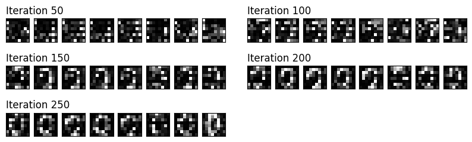

<!DOCTYPE html>


<html lang="en" >

  <head>
    <meta charset="utf-8" />
    <meta name="viewport" content="width=device-width, initial-scale=1.0" /><meta name="generator" content="Docutils 0.18.1: http://docutils.sourceforge.net/" />

    <title>Quantum GANs &#8212; IBM Community Japan 2023 ナレッジモール研究会</title>
  
  
  
  <script data-cfasync="false">
    document.documentElement.dataset.mode = localStorage.getItem("mode") || "";
    document.documentElement.dataset.theme = localStorage.getItem("theme") || "light";
  </script>
  
  <!-- Loaded before other Sphinx assets -->
  <link href="../_static/styles/theme.css?digest=ac02cc09edc035673794" rel="stylesheet" />
<link href="../_static/styles/bootstrap.css?digest=ac02cc09edc035673794" rel="stylesheet" />
<link href="../_static/styles/pydata-sphinx-theme.css?digest=ac02cc09edc035673794" rel="stylesheet" />

  
  <link href="../_static/vendor/fontawesome/6.1.2/css/all.min.css?digest=ac02cc09edc035673794" rel="stylesheet" />
  <link rel="preload" as="font" type="font/woff2" crossorigin href="../_static/vendor/fontawesome/6.1.2/webfonts/fa-solid-900.woff2" />
<link rel="preload" as="font" type="font/woff2" crossorigin href="../_static/vendor/fontawesome/6.1.2/webfonts/fa-brands-400.woff2" />
<link rel="preload" as="font" type="font/woff2" crossorigin href="../_static/vendor/fontawesome/6.1.2/webfonts/fa-regular-400.woff2" />

    <link rel="stylesheet" type="text/css" href="../_static/pygments.css" />
    <link rel="stylesheet" href="../_static/styles/sphinx-book-theme.css?digest=14f4ca6b54d191a8c7657f6c759bf11a5fb86285" type="text/css" />
    <link rel="stylesheet" type="text/css" href="../_static/togglebutton.css" />
    <link rel="stylesheet" type="text/css" href="../_static/copybutton.css" />
    <link rel="stylesheet" type="text/css" href="../_static/mystnb.4510f1fc1dee50b3e5859aac5469c37c29e427902b24a333a5f9fcb2f0b3ac41.css" />
    <link rel="stylesheet" type="text/css" href="../_static/sphinx-thebe.css" />
    <link rel="stylesheet" type="text/css" href="../_static/design-style.4045f2051d55cab465a707391d5b2007.min.css" />
  
  <!-- Pre-loaded scripts that we'll load fully later -->
  <link rel="preload" as="script" href="../_static/scripts/bootstrap.js?digest=ac02cc09edc035673794" />
<link rel="preload" as="script" href="../_static/scripts/pydata-sphinx-theme.js?digest=ac02cc09edc035673794" />
  <script src="../_static/vendor/fontawesome/6.1.2/js/all.min.js?digest=ac02cc09edc035673794"></script>

    <script data-url_root="../" id="documentation_options" src="../_static/documentation_options.js"></script>
    <script src="../_static/jquery.js"></script>
    <script src="../_static/underscore.js"></script>
    <script src="../_static/_sphinx_javascript_frameworks_compat.js"></script>
    <script src="../_static/doctools.js"></script>
    <script src="../_static/clipboard.min.js"></script>
    <script src="../_static/copybutton.js"></script>
    <script src="../_static/scripts/sphinx-book-theme.js?digest=5a5c038af52cf7bc1a1ec88eea08e6366ee68824"></script>
    <script>let toggleHintShow = 'Click to show';</script>
    <script>let toggleHintHide = 'Click to hide';</script>
    <script>let toggleOpenOnPrint = 'true';</script>
    <script src="../_static/togglebutton.js"></script>
    <script>var togglebuttonSelector = '.toggle, .admonition.dropdown';</script>
    <script src="../_static/design-tabs.js"></script>
    <script>const THEBE_JS_URL = "https://unpkg.com/thebe@0.8.2/lib/index.js"
const thebe_selector = ".thebe,.cell"
const thebe_selector_input = "pre"
const thebe_selector_output = ".output, .cell_output"
</script>
    <script async="async" src="../_static/sphinx-thebe.js"></script>
    <script>DOCUMENTATION_OPTIONS.pagename = 'team_a/1_pennylane_mnist';</script>
    <link rel="index" title="Index" href="../genindex.html" />
    <link rel="search" title="Search" href="../search.html" />
  <meta name="viewport" content="width=device-width, initial-scale=1"/>
  <meta name="docsearch:language" content="en"/>
  </head>
  
  
  <body data-bs-spy="scroll" data-bs-target=".bd-toc-nav" data-offset="180" data-bs-root-margin="0px 0px -60%" data-default-mode="">

  
  
  <a class="skip-link" href="#main-content">Skip to main content</a>
  
  <div id="pst-scroll-pixel-helper"></div>

  
  <button type="button" class="btn rounded-pill" id="pst-back-to-top">
    <i class="fa-solid fa-arrow-up"></i>
    Back to top
  </button>

  
  <input type="checkbox"
          class="sidebar-toggle"
          name="__primary"
          id="__primary"/>
  <label class="overlay overlay-primary" for="__primary"></label>
  
  <input type="checkbox"
          class="sidebar-toggle"
          name="__secondary"
          id="__secondary"/>
  <label class="overlay overlay-secondary" for="__secondary"></label>
  
  <div class="search-button__wrapper">
    <div class="search-button__overlay"></div>
    <div class="search-button__search-container">
<form class="bd-search d-flex align-items-center"
      action="../search.html"
      method="get">
  <i class="fa-solid fa-magnifying-glass"></i>
  <input type="search"
         class="form-control"
         name="q"
         id="search-input"
         placeholder="Search this book..."
         aria-label="Search this book..."
         autocomplete="off"
         autocorrect="off"
         autocapitalize="off"
         spellcheck="false"/>
  <span class="search-button__kbd-shortcut"><kbd class="kbd-shortcut__modifier">Ctrl</kbd>+<kbd>K</kbd></span>
</form></div>
  </div>
  
    <nav class="bd-header navbar navbar-expand-lg bd-navbar">
    </nav>
  
  <div class="bd-container">
    <div class="bd-container__inner bd-page-width">
      
      <div class="bd-sidebar-primary bd-sidebar">
        

  
  <div class="sidebar-header-items sidebar-primary__section">
    
    
    
    
  </div>
  
    <div class="sidebar-primary-items__start sidebar-primary__section">
        <div class="sidebar-primary-item">
  

<a class="navbar-brand logo" href="../intro.html">
  
  
  
  
    
    
      
    
    
    
    <script>document.write(``);</script>
  
  
</a></div>
        <div class="sidebar-primary-item"><nav class="bd-links" id="bd-docs-nav" aria-label="Main">
    <div class="bd-toc-item navbar-nav active">
        
        <ul class="nav bd-sidenav bd-sidenav__home-link">
            <li class="toctree-l1">
                <a class="reference internal" href="../intro.html">
                    量子コンピューターの活用研究
                </a>
            </li>
        </ul>
        <p aria-level="2" class="caption" role="heading"><span class="caption-text">コンテンツ</span></p>
<ul class="nav bd-sidenav">
<li class="toctree-l1"><a class="reference internal" href="../result_c.html">1. Qiskit認定資格取得のための基礎学習</a></li>
<li class="toctree-l1"><a class="reference internal" href="../result_b.html">2. ショアのアルゴリズム（初学者向け解説）</a></li>
<li class="toctree-l1"><a class="reference internal" href="../result_a.html">3. 量子機械学習</a></li>
<li class="toctree-l1"><a class="reference internal" href="../result_d.html">4. 成果公開に向けたGitHub環境活用</a></li>
</ul>

    </div>
</nav></div>
    </div>
  
  
  <div class="sidebar-primary-items__end sidebar-primary__section">
  </div>
  
  <div id="rtd-footer-container"></div>


      </div>
      
      <main id="main-content" class="bd-main">
        
        

<div class="sbt-scroll-pixel-helper"></div>

          <div class="bd-content">
            <div class="bd-article-container">
              
              <div class="bd-header-article">
<div class="header-article-items header-article__inner">
  
    <div class="header-article-items__start">
      
        <div class="header-article-item"><label class="sidebar-toggle primary-toggle btn btn-sm" for="__primary" title="Toggle primary sidebar" data-bs-placement="bottom" data-bs-toggle="tooltip">
  <span class="fa-solid fa-bars"></span>
</label></div>
      
    </div>
  
  
    <div class="header-article-items__end">
      
        <div class="header-article-item">

<div class="article-header-buttons">


<div class="dropdown dropdown-source-buttons">
  <button class="btn dropdown-toggle" type="button" data-bs-toggle="dropdown" aria-expanded="false" aria-label="Source repositories">
    <i class="fab fa-github"></i>
  </button>
  <ul class="dropdown-menu">
      
      
      
      <li><a href="https://github.com/wg-quantum/2023-b-07-a" target="_blank"
   class="btn btn-sm btn-source-repository-button dropdown-item"
   title="Source repository"
   data-bs-placement="left" data-bs-toggle="tooltip"
>
  

<span class="btn__icon-container">
  <i class="fab fa-github"></i>
  </span>
<span class="btn__text-container">Repository</span>
</a>
</li>
      
      
      
      
      <li><a href="https://github.com/wg-quantum/2023-b-07-a/issues/new?title=Issue%20on%20page%20%2Fteam_a/1_pennylane_mnist.html&body=Your%20issue%20content%20here." target="_blank"
   class="btn btn-sm btn-source-issues-button dropdown-item"
   title="Open an issue"
   data-bs-placement="left" data-bs-toggle="tooltip"
>
  

<span class="btn__icon-container">
  <i class="fas fa-lightbulb"></i>
  </span>
<span class="btn__text-container">Open issue</span>
</a>
</li>
      
  </ul>
</div>


<div class="dropdown dropdown-download-buttons">
  <button class="btn dropdown-toggle" type="button" data-bs-toggle="dropdown" aria-expanded="false" aria-label="Download this page">
    <i class="fas fa-download"></i>
  </button>
  <ul class="dropdown-menu">
      
      
      
      <li><a href="../_sources/team_a/1_pennylane_mnist.ipynb" target="_blank"
   class="btn btn-sm btn-download-source-button dropdown-item"
   title="Download source file"
   data-bs-placement="left" data-bs-toggle="tooltip"
>
  

<span class="btn__icon-container">
  <i class="fas fa-file"></i>
  </span>
<span class="btn__text-container">.ipynb</span>
</a>
</li>
      
      
      
      
      <li>
<button onclick="window.print()"
  class="btn btn-sm btn-download-pdf-button dropdown-item"
  title="Print to PDF"
  data-bs-placement="left" data-bs-toggle="tooltip"
>
  

<span class="btn__icon-container">
  <i class="fas fa-file-pdf"></i>
  </span>
<span class="btn__text-container">.pdf</span>
</button>
</li>
      
  </ul>
</div>


<button onclick="toggleFullScreen()"
  class="btn btn-sm btn-fullscreen-button"
  title="Fullscreen mode"
  data-bs-placement="bottom" data-bs-toggle="tooltip"
>
  

<span class="btn__icon-container">
  <i class="fas fa-expand"></i>
  </span>

</button>


<script>
document.write(`
  <button class="btn btn-sm navbar-btn theme-switch-button" title="light/dark" aria-label="light/dark" data-bs-placement="bottom" data-bs-toggle="tooltip">
    <span class="theme-switch nav-link" data-mode="light"><i class="fa-solid fa-sun fa-lg"></i></span>
    <span class="theme-switch nav-link" data-mode="dark"><i class="fa-solid fa-moon fa-lg"></i></span>
    <span class="theme-switch nav-link" data-mode="auto"><i class="fa-solid fa-circle-half-stroke fa-lg"></i></span>
  </button>
`);
</script>

<script>
document.write(`
  <button class="btn btn-sm navbar-btn search-button search-button__button" title="Search" aria-label="Search" data-bs-placement="bottom" data-bs-toggle="tooltip">
    <i class="fa-solid fa-magnifying-glass fa-lg"></i>
  </button>
`);
</script>
<label class="sidebar-toggle secondary-toggle btn btn-sm" for="__secondary"title="Toggle secondary sidebar" data-bs-placement="bottom" data-bs-toggle="tooltip">
    <span class="fa-solid fa-list"></span>
</label>
</div></div>
      
    </div>
  
</div>
</div>
              
              

<div id="jb-print-docs-body" class="onlyprint">
    <h1>Quantum GANs</h1>
    <!-- Table of contents -->
    <div id="print-main-content">
        <div id="jb-print-toc">
            
            <div>
                <h2> Contents </h2>
            </div>
            <nav aria-label="Page">
                <ul class="visible nav section-nav flex-column">
<li class="toc-h1 nav-item toc-entry"><a class="reference internal nav-link" href="#">Quantum GANs</a><ul class="visible nav section-nav flex-column">
<li class="toc-h2 nav-item toc-entry"><a class="reference internal nav-link" href="#reference">Reference</a></li>
</ul>
</li>
<li class="toc-h1 nav-item toc-entry"><a class="reference internal nav-link" href="#implementing-the-generator">Implementing the Generator</a></li>
<li class="toc-h1 nav-item toc-entry"><a class="reference internal nav-link" href="#training">Training</a></li>
<li class="toc-h1 nav-item toc-entry"><a class="reference internal nav-link" href="#finally">Finally</a></li>
</ul>

            </nav>
        </div>
    </div>
</div>

              
                
<div id="searchbox"></div>
                <article class="bd-article" role="main">
                  
  <section id="quantum-gans">
<h1>Quantum GANs<a class="headerlink" href="#quantum-gans" title="Permalink to this heading">#</a></h1>
<p>In this tutorial, we will explore quantum GANs to generate hand-written digits of zero.
</br>
This method successfully reproduces high-dimensional distributions as the number of runs of iteration increases.</p>
</br>
<section id="reference">
<h2>Reference<a class="headerlink" href="#reference" title="Permalink to this heading">#</a></h2>
<ul class="simple">
<li><p><a class="reference external" href="https://pennylane.ai/qml/demos/tutorial_quantum_gans">Quantum GANs</a></p>
<ul>
<li><p><a class="reference external" href="https://github.com/jundeli/quantum-gan">github</a></p></li>
</ul>
</li>
</ul>
<div class="cell docutils container">
<div class="cell_input docutils container">
<div class="highlight-ipython3 notranslate"><div class="highlight"><pre><span></span><span class="c1"># ! pip show torch</span>
</pre></div>
</div>
</div>
</div>
<div class="cell docutils container">
<div class="cell_input docutils container">
<div class="highlight-ipython3 notranslate"><div class="highlight"><pre><span></span><span class="o">!</span><span class="w"> </span>pip<span class="w"> </span>install<span class="w"> </span><span class="nv">watermark</span><span class="o">==</span><span class="m">2</span>.4.2
</pre></div>
</div>
</div>
<div class="cell_output docutils container">
<div class="output stream highlight-myst-ansi notranslate"><div class="highlight"><pre><span></span>Collecting watermark==2.4.2
  Obtaining dependency information for watermark==2.4.2 from https://files.pythonhosted.org/packages/c4/f0/2ab7ab5c3bf847b64b1bf25202df44ef1f338e3b8530bd356ddce3cab54b/watermark-2.4.2-py2.py3-none-any.whl.metadata
</pre></div>
</div>
<div class="output stream highlight-myst-ansi notranslate"><div class="highlight"><pre><span></span>  Downloading watermark-2.4.2-py2.py3-none-any.whl.metadata (1.3 kB)
</pre></div>
</div>
<div class="output stream highlight-myst-ansi notranslate"><div class="highlight"><pre><span></span>Requirement already satisfied: ipython&gt;=6.0 in /opt/hostedtoolcache/Python/3.8.18/x64/lib/python3.8/site-packages (from watermark==2.4.2) (8.12.2)
Requirement already satisfied: importlib-metadata&gt;=1.4 in /opt/hostedtoolcache/Python/3.8.18/x64/lib/python3.8/site-packages (from watermark==2.4.2) (6.8.0)
Collecting py3nvml&gt;=0.2 (from watermark==2.4.2)
  Downloading py3nvml-0.2.7-py3-none-any.whl (55 kB)
?25l     ━━━━━━━━━━━━━━━━━━━━━━━━━━━━━━━━━━━━━━━━ <span class=" -Color -Color-Green">0.0/55.5 kB</span> <span class=" -Color -Color-Red">?</span> eta <span class=" -Color -Color-Cyan">-:--:--</span>
     ━━━━━━━━━━━━━━━━━━━━━━━━━━━━━━━━━━━━━━━━ <span class=" -Color -Color-Green">55.5/55.5 kB</span> <span class=" -Color -Color-Red">2.7 MB/s</span> eta <span class=" -Color -Color-Cyan">0:00:00</span>
?25h
</pre></div>
</div>
<div class="output stream highlight-myst-ansi notranslate"><div class="highlight"><pre><span></span>Requirement already satisfied: setuptools in /opt/hostedtoolcache/Python/3.8.18/x64/lib/python3.8/site-packages (from watermark==2.4.2) (56.0.0)
Requirement already satisfied: zipp&gt;=0.5 in /opt/hostedtoolcache/Python/3.8.18/x64/lib/python3.8/site-packages (from importlib-metadata&gt;=1.4-&gt;watermark==2.4.2) (3.17.0)
</pre></div>
</div>
<div class="output stream highlight-myst-ansi notranslate"><div class="highlight"><pre><span></span>Requirement already satisfied: backcall in /opt/hostedtoolcache/Python/3.8.18/x64/lib/python3.8/site-packages (from ipython&gt;=6.0-&gt;watermark==2.4.2) (0.2.0)
Requirement already satisfied: decorator in /opt/hostedtoolcache/Python/3.8.18/x64/lib/python3.8/site-packages (from ipython&gt;=6.0-&gt;watermark==2.4.2) (5.1.1)
Requirement already satisfied: jedi&gt;=0.16 in /opt/hostedtoolcache/Python/3.8.18/x64/lib/python3.8/site-packages (from ipython&gt;=6.0-&gt;watermark==2.4.2) (0.19.0)
Requirement already satisfied: matplotlib-inline in /opt/hostedtoolcache/Python/3.8.18/x64/lib/python3.8/site-packages (from ipython&gt;=6.0-&gt;watermark==2.4.2) (0.1.6)
Requirement already satisfied: pickleshare in /opt/hostedtoolcache/Python/3.8.18/x64/lib/python3.8/site-packages (from ipython&gt;=6.0-&gt;watermark==2.4.2) (0.7.5)
Requirement already satisfied: prompt-toolkit!=3.0.37,&lt;3.1.0,&gt;=3.0.30 in /opt/hostedtoolcache/Python/3.8.18/x64/lib/python3.8/site-packages (from ipython&gt;=6.0-&gt;watermark==2.4.2) (3.0.39)
Requirement already satisfied: pygments&gt;=2.4.0 in /opt/hostedtoolcache/Python/3.8.18/x64/lib/python3.8/site-packages (from ipython&gt;=6.0-&gt;watermark==2.4.2) (2.16.1)
Requirement already satisfied: stack-data in /opt/hostedtoolcache/Python/3.8.18/x64/lib/python3.8/site-packages (from ipython&gt;=6.0-&gt;watermark==2.4.2) (0.6.2)
Requirement already satisfied: traitlets&gt;=5 in /opt/hostedtoolcache/Python/3.8.18/x64/lib/python3.8/site-packages (from ipython&gt;=6.0-&gt;watermark==2.4.2) (5.10.1)
Requirement already satisfied: typing-extensions in /opt/hostedtoolcache/Python/3.8.18/x64/lib/python3.8/site-packages (from ipython&gt;=6.0-&gt;watermark==2.4.2) (4.8.0)
Requirement already satisfied: pexpect&gt;4.3 in /opt/hostedtoolcache/Python/3.8.18/x64/lib/python3.8/site-packages (from ipython&gt;=6.0-&gt;watermark==2.4.2) (4.8.0)
</pre></div>
</div>
<div class="output stream highlight-myst-ansi notranslate"><div class="highlight"><pre><span></span>Collecting xmltodict (from py3nvml&gt;=0.2-&gt;watermark==2.4.2)
  Downloading xmltodict-0.13.0-py2.py3-none-any.whl (10.0 kB)
</pre></div>
</div>
<div class="output stream highlight-myst-ansi notranslate"><div class="highlight"><pre><span></span>Requirement already satisfied: parso&lt;0.9.0,&gt;=0.8.3 in /opt/hostedtoolcache/Python/3.8.18/x64/lib/python3.8/site-packages (from jedi&gt;=0.16-&gt;ipython&gt;=6.0-&gt;watermark==2.4.2) (0.8.3)
Requirement already satisfied: ptyprocess&gt;=0.5 in /opt/hostedtoolcache/Python/3.8.18/x64/lib/python3.8/site-packages (from pexpect&gt;4.3-&gt;ipython&gt;=6.0-&gt;watermark==2.4.2) (0.7.0)
Requirement already satisfied: wcwidth in /opt/hostedtoolcache/Python/3.8.18/x64/lib/python3.8/site-packages (from prompt-toolkit!=3.0.37,&lt;3.1.0,&gt;=3.0.30-&gt;ipython&gt;=6.0-&gt;watermark==2.4.2) (0.2.7)
</pre></div>
</div>
<div class="output stream highlight-myst-ansi notranslate"><div class="highlight"><pre><span></span>Requirement already satisfied: executing&gt;=1.2.0 in /opt/hostedtoolcache/Python/3.8.18/x64/lib/python3.8/site-packages (from stack-data-&gt;ipython&gt;=6.0-&gt;watermark==2.4.2) (1.2.0)
Requirement already satisfied: asttokens&gt;=2.1.0 in /opt/hostedtoolcache/Python/3.8.18/x64/lib/python3.8/site-packages (from stack-data-&gt;ipython&gt;=6.0-&gt;watermark==2.4.2) (2.4.0)
Requirement already satisfied: pure-eval in /opt/hostedtoolcache/Python/3.8.18/x64/lib/python3.8/site-packages (from stack-data-&gt;ipython&gt;=6.0-&gt;watermark==2.4.2) (0.2.2)
Requirement already satisfied: six&gt;=1.12.0 in /opt/hostedtoolcache/Python/3.8.18/x64/lib/python3.8/site-packages (from asttokens&gt;=2.1.0-&gt;stack-data-&gt;ipython&gt;=6.0-&gt;watermark==2.4.2) (1.16.0)
</pre></div>
</div>
<div class="output stream highlight-myst-ansi notranslate"><div class="highlight"><pre><span></span>Downloading watermark-2.4.2-py2.py3-none-any.whl (7.5 kB)
</pre></div>
</div>
<div class="output stream highlight-myst-ansi notranslate"><div class="highlight"><pre><span></span>Installing collected packages: xmltodict, py3nvml, watermark
</pre></div>
</div>
<div class="output stream highlight-myst-ansi notranslate"><div class="highlight"><pre><span></span>Successfully installed py3nvml-0.2.7 watermark-2.4.2 xmltodict-0.13.0
</pre></div>
</div>
<div class="output stream highlight-myst-ansi notranslate"><div class="highlight"><pre><span></span><span class=" -Color -Color-Bold">[</span><span class=" -Color -Color-Blue">notice</span><span class=" -Color -Color-Bold">]</span> A new release of pip is available: <span class=" -Color -Color-Red">23.0.1</span> -&gt; <span class=" -Color -Color-Green">23.2.1</span>
<span class=" -Color -Color-Bold">[</span><span class=" -Color -Color-Blue">notice</span><span class=" -Color -Color-Bold">]</span> To update, run: <span class=" -Color -Color-Green">pip install --upgrade pip</span>
</pre></div>
</div>
</div>
</div>
<div class="cell docutils container">
<div class="cell_input docutils container">
<div class="highlight-ipython3 notranslate"><div class="highlight"><pre><span></span><span class="o">!</span><span class="w"> </span>pip<span class="w"> </span>install<span class="w"> </span><span class="nv">pennylane</span><span class="o">==</span><span class="m">0</span>.31.0
</pre></div>
</div>
</div>
<div class="cell_output docutils container">
<div class="output stream highlight-myst-ansi notranslate"><div class="highlight"><pre><span></span>Collecting pennylane==0.31.0
  Obtaining dependency information for pennylane==0.31.0 from https://files.pythonhosted.org/packages/ef/07/34c305ba50e4ea662143e10d8f566078df5e4d71b8d8b376c532e30147de/PennyLane-0.31.0-py3-none-any.whl.metadata
</pre></div>
</div>
<div class="output stream highlight-myst-ansi notranslate"><div class="highlight"><pre><span></span>  Downloading PennyLane-0.31.0-py3-none-any.whl.metadata (9.0 kB)
</pre></div>
</div>
<div class="output stream highlight-myst-ansi notranslate"><div class="highlight"><pre><span></span>Collecting numpy&lt;1.24 (from pennylane==0.31.0)
  Downloading numpy-1.23.5-cp38-cp38-manylinux_2_17_x86_64.manylinux2014_x86_64.whl (17.1 MB)
?25l
</pre></div>
</div>
<div class="output stream highlight-myst-ansi notranslate"><div class="highlight"><pre><span></span>     ━━━━━━━━━━━━━━━━━━━━━━━━━━━━━━━━━━━━━━━━ <span class=" -Color -Color-Green">0.0/17.1 MB</span> <span class=" -Color -Color-Red">?</span> eta <span class=" -Color -Color-Cyan">-:--:--</span>
     ━━━━━━━━━━━━━━━━━━━━━━━━━━━━━━━━━━━━━━━━ <span class=" -Color -Color-Green">0.2/17.1 MB</span> <span class=" -Color -Color-Red">4.6 MB/s</span> eta <span class=" -Color -Color-Cyan">0:00:04</span>
</pre></div>
</div>
<div class="output stream highlight-myst-ansi notranslate"><div class="highlight"><pre><span></span>     ━━━━━━━━━━╸━━━━━━━━━━━━━━━━━━━━━━━━━━━━━ <span class=" -Color -Color-Green">4.6/17.1 MB</span> <span class=" -Color -Color-Red">66.9 MB/s</span> eta <span class=" -Color -Color-Cyan">0:00:01</span>
</pre></div>
</div>
<div class="output stream highlight-myst-ansi notranslate"><div class="highlight"><pre><span></span>     ━━━━━━━━━━━━━━━━━━━━━━━╺━━━━━━━━━━━━━━━━ <span class=" -Color -Color-Green">9.9/17.1 MB</span> <span class=" -Color -Color-Red">93.1 MB/s</span> eta <span class=" -Color -Color-Cyan">0:00:01</span>
     ━━━━━━━━━━━━━━━━━━━━━━━━━━━━━━━━━━━╸━━━ <span class=" -Color -Color-Green">15.6/17.1 MB</span> <span class=" -Color -Color-Red">154.6 MB/s</span> eta <span class=" -Color -Color-Cyan">0:00:01</span>
</pre></div>
</div>
<div class="output stream highlight-myst-ansi notranslate"><div class="highlight"><pre><span></span>     ━━━━━━━━━━━━━━━━━━━━━━━━━━━━━━━━━━━━━━╸ <span class=" -Color -Color-Green">17.1/17.1 MB</span> <span class=" -Color -Color-Red">154.3 MB/s</span> eta <span class=" -Color -Color-Cyan">0:00:01</span>
</pre></div>
</div>
<div class="output stream highlight-myst-ansi notranslate"><div class="highlight"><pre><span></span>     ━━━━━━━━━━━━━━━━━━━━━━━━━━━━━━━━━━━━━━╸ <span class=" -Color -Color-Green">17.1/17.1 MB</span> <span class=" -Color -Color-Red">154.3 MB/s</span> eta <span class=" -Color -Color-Cyan">0:00:01</span>
     ━━━━━━━━━━━━━━━━━━━━━━━━━━━━━━━━━━━━━━╸ <span class=" -Color -Color-Green">17.1/17.1 MB</span> <span class=" -Color -Color-Red">154.3 MB/s</span> eta <span class=" -Color -Color-Cyan">0:00:01</span>
</pre></div>
</div>
<div class="output stream highlight-myst-ansi notranslate"><div class="highlight"><pre><span></span>     ━━━━━━━━━━━━━━━━━━━━━━━━━━━━━━━━━━━━━━╸ <span class=" -Color -Color-Green">17.1/17.1 MB</span> <span class=" -Color -Color-Red">154.3 MB/s</span> eta <span class=" -Color -Color-Cyan">0:00:01</span>
</pre></div>
</div>
<div class="output stream highlight-myst-ansi notranslate"><div class="highlight"><pre><span></span>     ━━━━━━━━━━━━━━━━━━━━━━━━━━━━━━━━━━━━━━╸ <span class=" -Color -Color-Green">17.1/17.1 MB</span> <span class=" -Color -Color-Red">154.3 MB/s</span> eta <span class=" -Color -Color-Cyan">0:00:01</span>
     ━━━━━━━━━━━━━━━━━━━━━━━━━━━━━━━━━━━━━━━━ <span class=" -Color -Color-Green">17.1/17.1 MB</span> <span class=" -Color -Color-Red">39.3 MB/s</span> eta <span class=" -Color -Color-Cyan">0:00:00</span>
?25h
</pre></div>
</div>
<div class="output stream highlight-myst-ansi notranslate"><div class="highlight"><pre><span></span>Collecting scipy&lt;=1.10 (from pennylane==0.31.0)
  Downloading scipy-1.10.0-cp38-cp38-manylinux_2_17_x86_64.manylinux2014_x86_64.whl (34.5 MB)
?25l     ━━━━━━━━━━━━━━━━━━━━━━━━━━━━━━━━━━━━━━━━ <span class=" -Color -Color-Green">0.0/34.5 MB</span> <span class=" -Color -Color-Red">?</span> eta <span class=" -Color -Color-Cyan">-:--:--</span>
</pre></div>
</div>
<div class="output stream highlight-myst-ansi notranslate"><div class="highlight"><pre><span></span>     ━━━━━━╺━━━━━━━━━━━━━━━━━━━━━━━━━━━━━━━━━ <span class=" -Color -Color-Green">5.2/34.5 MB</span> <span class=" -Color -Color-Red">156.8 MB/s</span> eta <span class=" -Color -Color-Cyan">0:00:01</span>
</pre></div>
</div>
<div class="output stream highlight-myst-ansi notranslate"><div class="highlight"><pre><span></span>     ━━━━━━━━━━━╸━━━━━━━━━━━━━━━━━━━━━━━━━━━ <span class=" -Color -Color-Green">10.6/34.5 MB</span> <span class=" -Color -Color-Red">153.7 MB/s</span> eta <span class=" -Color -Color-Cyan">0:00:01</span>
     ━━━━━━━━━━━━━━━━━╸━━━━━━━━━━━━━━━━━━━━━ <span class=" -Color -Color-Green">15.9/34.5 MB</span> <span class=" -Color -Color-Red">154.0 MB/s</span> eta <span class=" -Color -Color-Cyan">0:00:01</span>
</pre></div>
</div>
<div class="output stream highlight-myst-ansi notranslate"><div class="highlight"><pre><span></span>     ━━━━━━━━━━━━━━━━━━━━━━━╸━━━━━━━━━━━━━━━ <span class=" -Color -Color-Green">21.0/34.5 MB</span> <span class=" -Color -Color-Red">148.8 MB/s</span> eta <span class=" -Color -Color-Cyan">0:00:01</span>
</pre></div>
</div>
<div class="output stream highlight-myst-ansi notranslate"><div class="highlight"><pre><span></span>     ━━━━━━━━━━━━━━━━━━━━━━━━━━━━━╺━━━━━━━━━ <span class=" -Color -Color-Green">26.1/34.5 MB</span> <span class=" -Color -Color-Red">147.4 MB/s</span> eta <span class=" -Color -Color-Cyan">0:00:01</span>
     ━━━━━━━━━━━━━━━━━━━━━━━━━━━━━━━━━━━╸━━━ <span class=" -Color -Color-Green">31.5/34.5 MB</span> <span class=" -Color -Color-Red">152.1 MB/s</span> eta <span class=" -Color -Color-Cyan">0:00:01</span>
</pre></div>
</div>
<div class="output stream highlight-myst-ansi notranslate"><div class="highlight"><pre><span></span>     ━━━━━━━━━━━━━━━━━━━━━━━━━━━━━━━━━━━━━━╸ <span class=" -Color -Color-Green">34.5/34.5 MB</span> <span class=" -Color -Color-Red">157.8 MB/s</span> eta <span class=" -Color -Color-Cyan">0:00:01</span>
</pre></div>
</div>
<div class="output stream highlight-myst-ansi notranslate"><div class="highlight"><pre><span></span>     ━━━━━━━━━━━━━━━━━━━━━━━━━━━━━━━━━━━━━━╸ <span class=" -Color -Color-Green">34.5/34.5 MB</span> <span class=" -Color -Color-Red">157.8 MB/s</span> eta <span class=" -Color -Color-Cyan">0:00:01</span>
</pre></div>
</div>
<div class="output stream highlight-myst-ansi notranslate"><div class="highlight"><pre><span></span>     ━━━━━━━━━━━━━━━━━━━━━━━━━━━━━━━━━━━━━━╸ <span class=" -Color -Color-Green">34.5/34.5 MB</span> <span class=" -Color -Color-Red">157.8 MB/s</span> eta <span class=" -Color -Color-Cyan">0:00:01</span>
     ━━━━━━━━━━━━━━━━━━━━━━━━━━━━━━━━━━━━━━╸ <span class=" -Color -Color-Green">34.5/34.5 MB</span> <span class=" -Color -Color-Red">157.8 MB/s</span> eta <span class=" -Color -Color-Cyan">0:00:01</span>
</pre></div>
</div>
<div class="output stream highlight-myst-ansi notranslate"><div class="highlight"><pre><span></span>     ━━━━━━━━━━━━━━━━━━━━━━━━━━━━━━━━━━━━━━╸ <span class=" -Color -Color-Green">34.5/34.5 MB</span> <span class=" -Color -Color-Red">157.8 MB/s</span> eta <span class=" -Color -Color-Cyan">0:00:01</span>
</pre></div>
</div>
<div class="output stream highlight-myst-ansi notranslate"><div class="highlight"><pre><span></span>     ━━━━━━━━━━━━━━━━━━━━━━━━━━━━━━━━━━━━━━╸ <span class=" -Color -Color-Green">34.5/34.5 MB</span> <span class=" -Color -Color-Red">157.8 MB/s</span> eta <span class=" -Color -Color-Cyan">0:00:01</span>
</pre></div>
</div>
<div class="output stream highlight-myst-ansi notranslate"><div class="highlight"><pre><span></span>     ━━━━━━━━━━━━━━━━━━━━━━━━━━━━━━━━━━━━━━╸ <span class=" -Color -Color-Green">34.5/34.5 MB</span> <span class=" -Color -Color-Red">157.8 MB/s</span> eta <span class=" -Color -Color-Cyan">0:00:01</span>
     ━━━━━━━━━━━━━━━━━━━━━━━━━━━━━━━━━━━━━━╸ <span class=" -Color -Color-Green">34.5/34.5 MB</span> <span class=" -Color -Color-Red">157.8 MB/s</span> eta <span class=" -Color -Color-Cyan">0:00:01</span>
</pre></div>
</div>
<div class="output stream highlight-myst-ansi notranslate"><div class="highlight"><pre><span></span>     ━━━━━━━━━━━━━━━━━━━━━━━━━━━━━━━━━━━━━━╸ <span class=" -Color -Color-Green">34.5/34.5 MB</span> <span class=" -Color -Color-Red">157.8 MB/s</span> eta <span class=" -Color -Color-Cyan">0:00:01</span>
</pre></div>
</div>
<div class="output stream highlight-myst-ansi notranslate"><div class="highlight"><pre><span></span>     ━━━━━━━━━━━━━━━━━━━━━━━━━━━━━━━━━━━━━━╸ <span class=" -Color -Color-Green">34.5/34.5 MB</span> <span class=" -Color -Color-Red">157.8 MB/s</span> eta <span class=" -Color -Color-Cyan">0:00:01</span>
     ━━━━━━━━━━━━━━━━━━━━━━━━━━━━━━━━━━━━━━╸ <span class=" -Color -Color-Green">34.5/34.5 MB</span> <span class=" -Color -Color-Red">157.8 MB/s</span> eta <span class=" -Color -Color-Cyan">0:00:01</span>
</pre></div>
</div>
<div class="output stream highlight-myst-ansi notranslate"><div class="highlight"><pre><span></span>     ━━━━━━━━━━━━━━━━━━━━━━━━━━━━━━━━━━━━━━╸ <span class=" -Color -Color-Green">34.5/34.5 MB</span> <span class=" -Color -Color-Red">157.8 MB/s</span> eta <span class=" -Color -Color-Cyan">0:00:01</span>
</pre></div>
</div>
<div class="output stream highlight-myst-ansi notranslate"><div class="highlight"><pre><span></span>     ━━━━━━━━━━━━━━━━━━━━━━━━━━━━━━━━━━━━━━╸ <span class=" -Color -Color-Green">34.5/34.5 MB</span> <span class=" -Color -Color-Red">157.8 MB/s</span> eta <span class=" -Color -Color-Cyan">0:00:01</span>
     ━━━━━━━━━━━━━━━━━━━━━━━━━━━━━━━━━━━━━━╸ <span class=" -Color -Color-Green">34.5/34.5 MB</span> <span class=" -Color -Color-Red">157.8 MB/s</span> eta <span class=" -Color -Color-Cyan">0:00:01</span>
</pre></div>
</div>
<div class="output stream highlight-myst-ansi notranslate"><div class="highlight"><pre><span></span>     ━━━━━━━━━━━━━━━━━━━━━━━━━━━━━━━━━━━━━━╸ <span class=" -Color -Color-Green">34.5/34.5 MB</span> <span class=" -Color -Color-Red">157.8 MB/s</span> eta <span class=" -Color -Color-Cyan">0:00:01</span>
</pre></div>
</div>
<div class="output stream highlight-myst-ansi notranslate"><div class="highlight"><pre><span></span>     ━━━━━━━━━━━━━━━━━━━━━━━━━━━━━━━━━━━━━━╸ <span class=" -Color -Color-Green">34.5/34.5 MB</span> <span class=" -Color -Color-Red">157.8 MB/s</span> eta <span class=" -Color -Color-Cyan">0:00:01</span>
</pre></div>
</div>
<div class="output stream highlight-myst-ansi notranslate"><div class="highlight"><pre><span></span>     ━━━━━━━━━━━━━━━━━━━━━━━━━━━━━━━━━━━━━━╸ <span class=" -Color -Color-Green">34.5/34.5 MB</span> <span class=" -Color -Color-Red">157.8 MB/s</span> eta <span class=" -Color -Color-Cyan">0:00:01</span>
     ━━━━━━━━━━━━━━━━━━━━━━━━━━━━━━━━━━━━━━╸ <span class=" -Color -Color-Green">34.5/34.5 MB</span> <span class=" -Color -Color-Red">157.8 MB/s</span> eta <span class=" -Color -Color-Cyan">0:00:01</span>
     ━━━━━━━━━━━━━━━━━━━━━━━━━━━━━━━━━━━━━━━━ <span class=" -Color -Color-Green">34.5/34.5 MB</span> <span class=" -Color -Color-Red">14.4 MB/s</span> eta <span class=" -Color -Color-Cyan">0:00:00</span>
?25h
</pre></div>
</div>
<div class="output stream highlight-myst-ansi notranslate"><div class="highlight"><pre><span></span>Collecting networkx (from pennylane==0.31.0)
  Downloading networkx-3.1-py3-none-any.whl (2.1 MB)
?25l     ━━━━━━━━━━━━━━━━━━━━━━━━━━━━━━━━━━━━━━━━ <span class=" -Color -Color-Green">0.0/2.1 MB</span> <span class=" -Color -Color-Red">?</span> eta <span class=" -Color -Color-Cyan">-:--:--</span>
</pre></div>
</div>
<div class="output stream highlight-myst-ansi notranslate"><div class="highlight"><pre><span></span>     ━━━━━━━━━━━━━━━━━━━━━━━━━━━━━━━━━━━━━━━╸ <span class=" -Color -Color-Green">2.1/2.1 MB</span> <span class=" -Color -Color-Red">194.0 MB/s</span> eta <span class=" -Color -Color-Cyan">0:00:01</span>
     ━━━━━━━━━━━━━━━━━━━━━━━━━━━━━━━━━━━━━━━━ <span class=" -Color -Color-Green">2.1/2.1 MB</span> <span class=" -Color -Color-Red">33.4 MB/s</span> eta <span class=" -Color -Color-Cyan">0:00:00</span>
?25h
</pre></div>
</div>
<div class="output stream highlight-myst-ansi notranslate"><div class="highlight"><pre><span></span>Collecting rustworkx (from pennylane==0.31.0)
  Obtaining dependency information for rustworkx from https://files.pythonhosted.org/packages/a4/2f/5e741f120bd9af9fc5b43c62a7d4653db797f41752ecdc922711d6962230/rustworkx-0.13.1-cp38-cp38-manylinux_2_17_x86_64.manylinux2014_x86_64.whl.metadata
  Downloading rustworkx-0.13.1-cp38-cp38-manylinux_2_17_x86_64.manylinux2014_x86_64.whl.metadata (10 kB)
</pre></div>
</div>
<div class="output stream highlight-myst-ansi notranslate"><div class="highlight"><pre><span></span>Collecting autograd&lt;=1.5 (from pennylane==0.31.0)
  Downloading autograd-1.5-py3-none-any.whl (48 kB)
?25l     ━━━━━━━━━━━━━━━━━━━━━━━━━━━━━━━━━━━━━━━━ <span class=" -Color -Color-Green">0.0/48.9 kB</span> <span class=" -Color -Color-Red">?</span> eta <span class=" -Color -Color-Cyan">-:--:--</span>
     ━━━━━━━━━━━━━━━━━━━━━━━━━━━━━━━━━━━━━━━━ <span class=" -Color -Color-Green">48.9/48.9 kB</span> <span class=" -Color -Color-Red">18.4 MB/s</span> eta <span class=" -Color -Color-Cyan">0:00:00</span>
?25hCollecting toml (from pennylane==0.31.0)
</pre></div>
</div>
<div class="output stream highlight-myst-ansi notranslate"><div class="highlight"><pre><span></span>  Downloading toml-0.10.2-py2.py3-none-any.whl (16 kB)
Collecting appdirs (from pennylane==0.31.0)
  Downloading appdirs-1.4.4-py2.py3-none-any.whl (9.6 kB)
Collecting semantic-version&gt;=2.7 (from pennylane==0.31.0)
  Downloading semantic_version-2.10.0-py2.py3-none-any.whl (15 kB)
</pre></div>
</div>
<div class="output stream highlight-myst-ansi notranslate"><div class="highlight"><pre><span></span>Collecting autoray&gt;=0.3.1 (from pennylane==0.31.0)
  Obtaining dependency information for autoray&gt;=0.3.1 from https://files.pythonhosted.org/packages/7b/c2/c6aa844448722e795925560f39be3d5c737d5cc83770ef00505440be4b83/autoray-0.6.6-py3-none-any.whl.metadata
  Downloading autoray-0.6.6-py3-none-any.whl.metadata (18 kB)
</pre></div>
</div>
<div class="output stream highlight-myst-ansi notranslate"><div class="highlight"><pre><span></span>Collecting cachetools (from pennylane==0.31.0)
  Obtaining dependency information for cachetools from https://files.pythonhosted.org/packages/a9/c9/c8a7710f2cedcb1db9224fdd4d8307c9e48cbddc46c18b515fefc0f1abbe/cachetools-5.3.1-py3-none-any.whl.metadata
  Downloading cachetools-5.3.1-py3-none-any.whl.metadata (5.2 kB)
</pre></div>
</div>
<div class="output stream highlight-myst-ansi notranslate"><div class="highlight"><pre><span></span>Collecting pennylane-lightning&gt;=0.31 (from pennylane==0.31.0)
  Obtaining dependency information for pennylane-lightning&gt;=0.31 from https://files.pythonhosted.org/packages/77/24/8fab61e0a7719da8df794518d9f903147a5af6ba36f6ad344a6e238a0024/PennyLane_Lightning-0.32.0-py3-none-any.whl.metadata
  Downloading PennyLane_Lightning-0.32.0-py3-none-any.whl.metadata (14 kB)
Requirement already satisfied: requests in /opt/hostedtoolcache/Python/3.8.18/x64/lib/python3.8/site-packages (from pennylane==0.31.0) (2.31.0)
</pre></div>
</div>
<div class="output stream highlight-myst-ansi notranslate"><div class="highlight"><pre><span></span>Collecting future&gt;=0.15.2 (from autograd&lt;=1.5-&gt;pennylane==0.31.0)
  Downloading future-0.18.3.tar.gz (840 kB)
?25l     ━━━━━━━━━━━━━━━━━━━━━━━━━━━━━━━━━━━━━━━━ <span class=" -Color -Color-Green">0.0/840.9 kB</span> <span class=" -Color -Color-Red">?</span> eta <span class=" -Color -Color-Cyan">-:--:--</span>
     ━━━━━━━━━━━━━━━━━━━━━━━━━━━━━━━━━━━━━━ <span class=" -Color -Color-Green">840.9/840.9 kB</span> <span class=" -Color -Color-Red">28.2 MB/s</span> eta <span class=" -Color -Color-Cyan">0:00:00</span>
?25h
</pre></div>
</div>
<div class="output stream highlight-myst-ansi notranslate"><div class="highlight"><pre><span></span>  Preparing metadata (setup.py) ... ?25l-
</pre></div>
</div>
<div class="output stream highlight-myst-ansi notranslate"><div class="highlight"><pre><span></span> \
</pre></div>
</div>
<div class="output stream highlight-myst-ansi notranslate"><div class="highlight"><pre><span></span> done
</pre></div>
</div>
<div class="output stream highlight-myst-ansi notranslate"><div class="highlight"><pre><span></span>?25hRequirement already satisfied: charset-normalizer&lt;4,&gt;=2 in /opt/hostedtoolcache/Python/3.8.18/x64/lib/python3.8/site-packages (from requests-&gt;pennylane==0.31.0) (3.2.0)
Requirement already satisfied: idna&lt;4,&gt;=2.5 in /opt/hostedtoolcache/Python/3.8.18/x64/lib/python3.8/site-packages (from requests-&gt;pennylane==0.31.0) (3.4)
Requirement already satisfied: urllib3&lt;3,&gt;=1.21.1 in /opt/hostedtoolcache/Python/3.8.18/x64/lib/python3.8/site-packages (from requests-&gt;pennylane==0.31.0) (2.0.5)
Requirement already satisfied: certifi&gt;=2017.4.17 in /opt/hostedtoolcache/Python/3.8.18/x64/lib/python3.8/site-packages (from requests-&gt;pennylane==0.31.0) (2023.7.22)
</pre></div>
</div>
<div class="output stream highlight-myst-ansi notranslate"><div class="highlight"><pre><span></span>Downloading PennyLane-0.31.0-py3-none-any.whl (1.4 MB)
?25l   ━━━━━━━━━━━━━━━━━━━━━━━━━━━━━━━━━━━━━━━━ <span class=" -Color -Color-Green">0.0/1.4 MB</span> <span class=" -Color -Color-Red">?</span> eta <span class=" -Color -Color-Cyan">-:--:--</span>
</pre></div>
</div>
<div class="output stream highlight-myst-ansi notranslate"><div class="highlight"><pre><span></span>   ━━━━━━━━━━━━━━━━━━━━━━━━━━━━━━━━━━━━━━━╸ <span class=" -Color -Color-Green">1.4/1.4 MB</span> <span class=" -Color -Color-Red">197.3 MB/s</span> eta <span class=" -Color -Color-Cyan">0:00:01</span>
   ━━━━━━━━━━━━━━━━━━━━━━━━━━━━━━━━━━━━━━━━ <span class=" -Color -Color-Green">1.4/1.4 MB</span> <span class=" -Color -Color-Red">31.1 MB/s</span> eta <span class=" -Color -Color-Cyan">0:00:00</span>
?25hDownloading autoray-0.6.6-py3-none-any.whl (54 kB)
?25l   ━━━━━━━━━━━━━━━━━━━━━━━━━━━━━━━━━━━━━━━━ <span class=" -Color -Color-Green">0.0/54.7 kB</span> <span class=" -Color -Color-Red">?</span> eta <span class=" -Color -Color-Cyan">-:--:--</span>
   ━━━━━━━━━━━━━━━━━━━━━━━━━━━━━━━━━━━━━━━━ <span class=" -Color -Color-Green">54.7/54.7 kB</span> <span class=" -Color -Color-Red">13.7 MB/s</span> eta <span class=" -Color -Color-Cyan">0:00:00</span>
?25hDownloading PennyLane_Lightning-0.32.0-py3-none-any.whl (84 kB)
?25l   ━━━━━━━━━━━━━━━━━━━━━━━━━━━━━━━━━━━━━━━━ <span class=" -Color -Color-Green">0.0/84.1 kB</span> <span class=" -Color -Color-Red">?</span> eta <span class=" -Color -Color-Cyan">-:--:--</span>
   ━━━━━━━━━━━━━━━━━━━━━━━━━━━━━━━━━━━━━━━━ <span class=" -Color -Color-Green">84.1/84.1 kB</span> <span class=" -Color -Color-Red">20.0 MB/s</span> eta <span class=" -Color -Color-Cyan">0:00:00</span>
?25hDownloading cachetools-5.3.1-py3-none-any.whl (9.3 kB)
</pre></div>
</div>
<div class="output stream highlight-myst-ansi notranslate"><div class="highlight"><pre><span></span>Downloading rustworkx-0.13.1-cp38-cp38-manylinux_2_17_x86_64.manylinux2014_x86_64.whl (2.0 MB)
?25l   ━━━━━━━━━━━━━━━━━━━━━━━━━━━━━━━━━━━━━━━━ <span class=" -Color -Color-Green">0.0/2.0 MB</span> <span class=" -Color -Color-Red">?</span> eta <span class=" -Color -Color-Cyan">-:--:--</span>
   ━━━━━━━━━━━━━━━━━━━━━━━━━━━━━━━━━━━━━━━╸ <span class=" -Color -Color-Green">2.0/2.0 MB</span> <span class=" -Color -Color-Red">196.5 MB/s</span> eta <span class=" -Color -Color-Cyan">0:00:01</span>
</pre></div>
</div>
<div class="output stream highlight-myst-ansi notranslate"><div class="highlight"><pre><span></span>   ━━━━━━━━━━━━━━━━━━━━━━━━━━━━━━━━━━━━━━━━ <span class=" -Color -Color-Green">2.0/2.0 MB</span> <span class=" -Color -Color-Red">35.3 MB/s</span> eta <span class=" -Color -Color-Cyan">0:00:00</span>
?25hBuilding wheels for collected packages: future
</pre></div>
</div>
<div class="output stream highlight-myst-ansi notranslate"><div class="highlight"><pre><span></span>  Building wheel for future (setup.py) ... ?25l-
</pre></div>
</div>
<div class="output stream highlight-myst-ansi notranslate"><div class="highlight"><pre><span></span> \
</pre></div>
</div>
<div class="output stream highlight-myst-ansi notranslate"><div class="highlight"><pre><span></span> |
</pre></div>
</div>
<div class="output stream highlight-myst-ansi notranslate"><div class="highlight"><pre><span></span> /
</pre></div>
</div>
<div class="output stream highlight-myst-ansi notranslate"><div class="highlight"><pre><span></span> done
?25h  Created wheel for future: filename=future-0.18.3-py3-none-any.whl size=492025 sha256=a7310a3c53e9e6f61b23c2f80bd3763c3ab7bcfc589be5ed84f91ad7b7b673ec
  Stored in directory: /home/runner/.cache/pip/wheels/a0/0b/ee/e6994fadb42c1354dcccb139b0bf2795271bddfe6253ccdf11
</pre></div>
</div>
<div class="output stream highlight-myst-ansi notranslate"><div class="highlight"><pre><span></span>Successfully built future
</pre></div>
</div>
<div class="output stream highlight-myst-ansi notranslate"><div class="highlight"><pre><span></span>Installing collected packages: appdirs, toml, semantic-version, numpy, networkx, future, cachetools, autoray, scipy, rustworkx, autograd, pennylane-lightning, pennylane
</pre></div>
</div>
<div class="output stream highlight-myst-ansi notranslate"><div class="highlight"><pre><span></span>  Attempting uninstall: numpy
    Found existing installation: numpy 1.24.4
</pre></div>
</div>
<div class="output stream highlight-myst-ansi notranslate"><div class="highlight"><pre><span></span>    Uninstalling numpy-1.24.4:
      Successfully uninstalled numpy-1.24.4
</pre></div>
</div>
<div class="output stream highlight-myst-ansi notranslate"><div class="highlight"><pre><span></span>Successfully installed appdirs-1.4.4 autograd-1.5 autoray-0.6.6 cachetools-5.3.1 future-0.18.3 networkx-3.1 numpy-1.23.5 pennylane-0.31.0 pennylane-lightning-0.32.0 rustworkx-0.13.1 scipy-1.10.0 semantic-version-2.10.0 toml-0.10.2
</pre></div>
</div>
<div class="output stream highlight-myst-ansi notranslate"><div class="highlight"><pre><span></span><span class=" -Color -Color-Bold">[</span><span class=" -Color -Color-Blue">notice</span><span class=" -Color -Color-Bold">]</span> A new release of pip is available: <span class=" -Color -Color-Red">23.0.1</span> -&gt; <span class=" -Color -Color-Green">23.2.1</span>
<span class=" -Color -Color-Bold">[</span><span class=" -Color -Color-Blue">notice</span><span class=" -Color -Color-Bold">]</span> To update, run: <span class=" -Color -Color-Green">pip install --upgrade pip</span>
</pre></div>
</div>
</div>
</div>
<div class="cell docutils container">
<div class="cell_input docutils container">
<div class="highlight-ipython3 notranslate"><div class="highlight"><pre><span></span><span class="kn">import</span> <span class="nn">math</span>
<span class="kn">import</span> <span class="nn">random</span>
<span class="kn">import</span> <span class="nn">numpy</span> <span class="k">as</span> <span class="nn">np</span>
<span class="kn">import</span> <span class="nn">pandas</span> <span class="k">as</span> <span class="nn">pd</span>
<span class="kn">import</span> <span class="nn">matplotlib.pyplot</span> <span class="k">as</span> <span class="nn">plt</span>
<span class="kn">import</span> <span class="nn">matplotlib.gridspec</span> <span class="k">as</span> <span class="nn">gridspec</span>
<span class="kn">import</span> <span class="nn">pennylane</span> <span class="k">as</span> <span class="nn">qml</span>

<span class="c1"># Pytorch imports</span>
<span class="kn">import</span> <span class="nn">torch</span>
<span class="kn">import</span> <span class="nn">torch.nn</span> <span class="k">as</span> <span class="nn">nn</span>
<span class="kn">import</span> <span class="nn">torch.optim</span> <span class="k">as</span> <span class="nn">optim</span>
<span class="kn">import</span> <span class="nn">torchvision</span>
<span class="kn">import</span> <span class="nn">torchvision.transforms</span> <span class="k">as</span> <span class="nn">transforms</span>
<span class="kn">from</span> <span class="nn">torch.utils.data</span> <span class="kn">import</span> <span class="n">Dataset</span><span class="p">,</span> <span class="n">DataLoader</span>
</pre></div>
</div>
</div>
<div class="cell_output docutils container">
<div class="output traceback highlight-ipythontb notranslate"><div class="highlight"><pre><span></span><span class="gt">---------------------------------------------------------------------------</span>
<span class="ne">ModuleNotFoundError</span><span class="g g-Whitespace">                       </span>Traceback (most recent call last)
<span class="n">Cell</span> <span class="n">In</span><span class="p">[</span><span class="mi">4</span><span class="p">],</span> <span class="n">line</span> <span class="mi">4</span>
<span class="g g-Whitespace">      </span><span class="mi">2</span> <span class="kn">import</span> <span class="nn">random</span>
<span class="g g-Whitespace">      </span><span class="mi">3</span> <span class="kn">import</span> <span class="nn">numpy</span> <span class="k">as</span> <span class="nn">np</span>
<span class="ne">----&gt; </span><span class="mi">4</span> <span class="kn">import</span> <span class="nn">pandas</span> <span class="k">as</span> <span class="nn">pd</span>
<span class="g g-Whitespace">      </span><span class="mi">5</span> <span class="kn">import</span> <span class="nn">matplotlib.pyplot</span> <span class="k">as</span> <span class="nn">plt</span>
<span class="g g-Whitespace">      </span><span class="mi">6</span> <span class="kn">import</span> <span class="nn">matplotlib.gridspec</span> <span class="k">as</span> <span class="nn">gridspec</span>

<span class="ne">ModuleNotFoundError</span>: No module named &#39;pandas&#39;
</pre></div>
</div>
</div>
</div>
<div class="cell docutils container">
<div class="cell_input docutils container">
<div class="highlight-ipython3 notranslate"><div class="highlight"><pre><span></span><span class="c1">#@title Set the random seed for reproducibility</span>
<span class="n">seed</span> <span class="o">=</span> <span class="mi">42</span>
<span class="n">torch</span><span class="o">.</span><span class="n">manual_seed</span><span class="p">(</span><span class="n">seed</span><span class="p">)</span>
<span class="n">np</span><span class="o">.</span><span class="n">random</span><span class="o">.</span><span class="n">seed</span><span class="p">(</span><span class="n">seed</span><span class="p">)</span>
<span class="n">random</span><span class="o">.</span><span class="n">seed</span><span class="p">(</span><span class="n">seed</span><span class="p">)</span>
</pre></div>
</div>
</div>
</div>
<div class="cell docutils container">
<div class="cell_input docutils container">
<div class="highlight-ipython3 notranslate"><div class="highlight"><pre><span></span><span class="c1">#@title dataset</span>

<span class="k">class</span> <span class="nc">DigitsDataset</span><span class="p">(</span><span class="n">Dataset</span><span class="p">):</span>
<span class="w">    </span><span class="sd">&quot;&quot;&quot;Pytorch dataloader for the Optical Recognition of Handwritten Digits Data Set&quot;&quot;&quot;</span>

    <span class="k">def</span> <span class="fm">__init__</span><span class="p">(</span><span class="bp">self</span><span class="p">,</span> <span class="n">csv_file</span><span class="p">,</span> <span class="n">label</span><span class="o">=</span><span class="mi">0</span><span class="p">,</span> <span class="n">transform</span><span class="o">=</span><span class="kc">None</span><span class="p">):</span>

        <span class="bp">self</span><span class="o">.</span><span class="n">csv_file</span> <span class="o">=</span> <span class="n">csv_file</span>
        <span class="bp">self</span><span class="o">.</span><span class="n">transform</span> <span class="o">=</span> <span class="n">transform</span>
        <span class="bp">self</span><span class="o">.</span><span class="n">df</span> <span class="o">=</span> <span class="bp">self</span><span class="o">.</span><span class="n">filter_by_label</span><span class="p">(</span><span class="n">label</span><span class="p">)</span>

    <span class="k">def</span> <span class="nf">filter_by_label</span><span class="p">(</span><span class="bp">self</span><span class="p">,</span> <span class="n">label</span><span class="p">):</span>
        <span class="c1"># Use pandas to return a dataframe of only zeros</span>
        <span class="n">df</span> <span class="o">=</span> <span class="n">pd</span><span class="o">.</span><span class="n">read_csv</span><span class="p">(</span><span class="bp">self</span><span class="o">.</span><span class="n">csv_file</span><span class="p">)</span>
        <span class="n">df</span> <span class="o">=</span> <span class="n">df</span><span class="o">.</span><span class="n">loc</span><span class="p">[</span><span class="n">df</span><span class="o">.</span><span class="n">iloc</span><span class="p">[:,</span> <span class="o">-</span><span class="mi">1</span><span class="p">]</span> <span class="o">==</span> <span class="n">label</span><span class="p">]</span>
        <span class="k">return</span> <span class="n">df</span>

    <span class="k">def</span> <span class="fm">__len__</span><span class="p">(</span><span class="bp">self</span><span class="p">):</span>
        <span class="k">return</span> <span class="nb">len</span><span class="p">(</span><span class="bp">self</span><span class="o">.</span><span class="n">df</span><span class="p">)</span>

    <span class="k">def</span> <span class="fm">__getitem__</span><span class="p">(</span><span class="bp">self</span><span class="p">,</span> <span class="n">idx</span><span class="p">):</span>
        <span class="k">if</span> <span class="n">torch</span><span class="o">.</span><span class="n">is_tensor</span><span class="p">(</span><span class="n">idx</span><span class="p">):</span>
            <span class="n">idx</span> <span class="o">=</span> <span class="n">idx</span><span class="o">.</span><span class="n">tolist</span><span class="p">()</span>

        <span class="n">image</span> <span class="o">=</span> <span class="bp">self</span><span class="o">.</span><span class="n">df</span><span class="o">.</span><span class="n">iloc</span><span class="p">[</span><span class="n">idx</span><span class="p">,</span> <span class="p">:</span><span class="o">-</span><span class="mi">1</span><span class="p">]</span> <span class="o">/</span> <span class="mi">16</span>
        <span class="n">image</span> <span class="o">=</span> <span class="n">np</span><span class="o">.</span><span class="n">array</span><span class="p">(</span><span class="n">image</span><span class="p">)</span>
        <span class="n">image</span> <span class="o">=</span> <span class="n">image</span><span class="o">.</span><span class="n">astype</span><span class="p">(</span><span class="n">np</span><span class="o">.</span><span class="n">float32</span><span class="p">)</span><span class="o">.</span><span class="n">reshape</span><span class="p">(</span><span class="mi">8</span><span class="p">,</span> <span class="mi">8</span><span class="p">)</span>

        <span class="k">if</span> <span class="bp">self</span><span class="o">.</span><span class="n">transform</span><span class="p">:</span>
            <span class="n">image</span> <span class="o">=</span> <span class="bp">self</span><span class="o">.</span><span class="n">transform</span><span class="p">(</span><span class="n">image</span><span class="p">)</span>

        <span class="c1"># Return image and label</span>
        <span class="k">return</span> <span class="n">image</span><span class="p">,</span> <span class="mi">0</span>
</pre></div>
</div>
</div>
</div>
<div class="cell docutils container">
<div class="cell_input docutils container">
<div class="highlight-ipython3 notranslate"><div class="highlight"><pre><span></span><span class="n">image_size</span> <span class="o">=</span> <span class="mi">8</span>  <span class="c1"># Height / width of the square images</span>
<span class="n">batch_size</span> <span class="o">=</span> <span class="mi">1</span>
<span class="n">label</span> <span class="o">=</span> <span class="mi">0</span> <span class="c1"># default value is 0</span>

<span class="n">transform</span> <span class="o">=</span> <span class="n">transforms</span><span class="o">.</span><span class="n">Compose</span><span class="p">([</span><span class="n">transforms</span><span class="o">.</span><span class="n">ToTensor</span><span class="p">()])</span>
<span class="n">dataset</span> <span class="o">=</span> <span class="n">DigitsDataset</span><span class="p">(</span><span class="n">csv_file</span><span class="o">=</span><span class="s2">&quot;https://datahub.io/machine-learning/optdigits/r/optdigits.csv&quot;</span><span class="p">,</span> <span class="n">label</span><span class="o">=</span><span class="n">label</span><span class="p">,</span> <span class="n">transform</span><span class="o">=</span><span class="n">transform</span><span class="p">)</span>
<span class="n">dataloader</span> <span class="o">=</span> <span class="n">torch</span><span class="o">.</span><span class="n">utils</span><span class="o">.</span><span class="n">data</span><span class="o">.</span><span class="n">DataLoader</span><span class="p">(</span>
    <span class="n">dataset</span><span class="p">,</span> <span class="n">batch_size</span><span class="o">=</span><span class="n">batch_size</span><span class="p">,</span> <span class="n">shuffle</span><span class="o">=</span><span class="kc">True</span><span class="p">,</span> <span class="n">drop_last</span><span class="o">=</span><span class="kc">True</span>
<span class="p">)</span>
</pre></div>
</div>
</div>
</div>
<div class="cell docutils container">
<div class="cell_input docutils container">
<div class="highlight-ipython3 notranslate"><div class="highlight"><pre><span></span><span class="n">plt</span><span class="o">.</span><span class="n">figure</span><span class="p">(</span><span class="n">figsize</span><span class="o">=</span><span class="p">(</span><span class="mi">8</span><span class="p">,</span><span class="mi">2</span><span class="p">))</span>

<span class="k">for</span> <span class="n">i</span> <span class="ow">in</span> <span class="nb">range</span><span class="p">(</span><span class="mi">8</span><span class="p">):</span>
    <span class="n">image</span> <span class="o">=</span> <span class="n">dataset</span><span class="p">[</span><span class="n">i</span><span class="p">][</span><span class="mi">0</span><span class="p">]</span><span class="o">.</span><span class="n">reshape</span><span class="p">(</span><span class="n">image_size</span><span class="p">,</span><span class="n">image_size</span><span class="p">)</span>
    <span class="n">plt</span><span class="o">.</span><span class="n">subplot</span><span class="p">(</span><span class="mi">1</span><span class="p">,</span><span class="mi">8</span><span class="p">,</span><span class="n">i</span><span class="o">+</span><span class="mi">1</span><span class="p">)</span>
    <span class="n">plt</span><span class="o">.</span><span class="n">axis</span><span class="p">(</span><span class="s1">&#39;off&#39;</span><span class="p">)</span>
    <span class="n">plt</span><span class="o">.</span><span class="n">imshow</span><span class="p">(</span><span class="n">image</span><span class="o">.</span><span class="n">numpy</span><span class="p">(),</span> <span class="n">cmap</span><span class="o">=</span><span class="s1">&#39;gray&#39;</span><span class="p">)</span>

<span class="n">plt</span><span class="o">.</span><span class="n">show</span><span class="p">()</span>
</pre></div>
</div>
</div>
<div class="cell_output docutils container">

</div>
</div>
<div class="cell docutils container">
<div class="cell_input docutils container">
<div class="highlight-ipython3 notranslate"><div class="highlight"><pre><span></span><span class="c1"># @title Implementing the Discriminator</span>

<span class="k">class</span> <span class="nc">Discriminator</span><span class="p">(</span><span class="n">nn</span><span class="o">.</span><span class="n">Module</span><span class="p">):</span>
<span class="w">    </span><span class="sd">&quot;&quot;&quot;Fully connected classical discriminator&quot;&quot;&quot;</span>

    <span class="k">def</span> <span class="fm">__init__</span><span class="p">(</span><span class="bp">self</span><span class="p">):</span>
        <span class="nb">super</span><span class="p">()</span><span class="o">.</span><span class="fm">__init__</span><span class="p">()</span>

        <span class="bp">self</span><span class="o">.</span><span class="n">model</span> <span class="o">=</span> <span class="n">nn</span><span class="o">.</span><span class="n">Sequential</span><span class="p">(</span>
            <span class="c1"># Inputs to first hidden layer (num_input_features -&gt; 64)</span>
            <span class="n">nn</span><span class="o">.</span><span class="n">Linear</span><span class="p">(</span><span class="n">image_size</span> <span class="o">*</span> <span class="n">image_size</span><span class="p">,</span> <span class="mi">64</span><span class="p">),</span>
            <span class="n">nn</span><span class="o">.</span><span class="n">ReLU</span><span class="p">(),</span>
            <span class="c1"># First hidden layer (64 -&gt; 16)</span>
            <span class="n">nn</span><span class="o">.</span><span class="n">Linear</span><span class="p">(</span><span class="mi">64</span><span class="p">,</span> <span class="mi">16</span><span class="p">),</span>
            <span class="n">nn</span><span class="o">.</span><span class="n">ReLU</span><span class="p">(),</span>
            <span class="c1"># Second hidden layer (16 -&gt; output)</span>
            <span class="n">nn</span><span class="o">.</span><span class="n">Linear</span><span class="p">(</span><span class="mi">16</span><span class="p">,</span> <span class="mi">1</span><span class="p">),</span>
            <span class="n">nn</span><span class="o">.</span><span class="n">Sigmoid</span><span class="p">(),</span>
        <span class="p">)</span>

    <span class="k">def</span> <span class="nf">forward</span><span class="p">(</span><span class="bp">self</span><span class="p">,</span> <span class="n">x</span><span class="p">):</span>
        <span class="k">return</span> <span class="bp">self</span><span class="o">.</span><span class="n">model</span><span class="p">(</span><span class="n">x</span><span class="p">)</span>
</pre></div>
</div>
</div>
</div>
<hr class="docutils" />
</section>
</section>
<section id="implementing-the-generator">
<h1>Implementing the Generator<a class="headerlink" href="#implementing-the-generator" title="Permalink to this heading">#</a></h1>
<div class="cell docutils container">
<div class="cell_input docutils container">
<div class="highlight-ipython3 notranslate"><div class="highlight"><pre><span></span><span class="c1">#@title Quantum variables</span>
<span class="n">n_qubits</span> <span class="o">=</span> <span class="mi">5</span>  <span class="c1"># Total number of qubits / N</span>
<span class="n">n_a_qubits</span> <span class="o">=</span> <span class="mi">1</span>  <span class="c1"># Number of ancillary qubits / N_A</span>
<span class="n">q_depth</span> <span class="o">=</span> <span class="mi">6</span>  <span class="c1"># Depth of the parameterised quantum circuit / D</span>
<span class="n">n_generators</span> <span class="o">=</span> <span class="mi">4</span>  <span class="c1"># Number of subgenerators for the patch method / N_G</span>
</pre></div>
</div>
</div>
</div>
<div class="cell docutils container">
<div class="cell_input docutils container">
<div class="highlight-ipython3 notranslate"><div class="highlight"><pre><span></span><span class="c1">#@title Quantum simulator</span>
<span class="c1">### GPUかCPUか</span>

<span class="n">dev</span> <span class="o">=</span> <span class="n">qml</span><span class="o">.</span><span class="n">device</span><span class="p">(</span><span class="s2">&quot;lightning.qubit&quot;</span><span class="p">,</span> <span class="n">wires</span><span class="o">=</span><span class="n">n_qubits</span><span class="p">)</span>
<span class="c1"># Enable CUDA device if available</span>
<span class="n">device</span> <span class="o">=</span> <span class="n">torch</span><span class="o">.</span><span class="n">device</span><span class="p">(</span><span class="s2">&quot;cuda:0&quot;</span> <span class="k">if</span> <span class="n">torch</span><span class="o">.</span><span class="n">cuda</span><span class="o">.</span><span class="n">is_available</span><span class="p">()</span> <span class="k">else</span> <span class="s2">&quot;cpu&quot;</span><span class="p">)</span>
</pre></div>
</div>
</div>
</div>
<div class="cell docutils container">
<div class="cell_input docutils container">
<div class="highlight-ipython3 notranslate"><div class="highlight"><pre><span></span><span class="n">device</span>
</pre></div>
</div>
</div>
<div class="cell_output docutils container">
<div class="output text_plain highlight-myst-ansi notranslate"><div class="highlight"><pre><span></span>device(type=&#39;cuda&#39;, index=0)
</pre></div>
</div>
</div>
</div>
<div class="cell docutils container">
<div class="cell_input docutils container">
<div class="highlight-ipython3 notranslate"><div class="highlight"><pre><span></span><span class="c1">#@title we define the quantum circuit and measurement process described above</span>

<span class="nd">@qml</span><span class="o">.</span><span class="n">qnode</span><span class="p">(</span><span class="n">dev</span><span class="p">,</span> <span class="n">interface</span><span class="o">=</span><span class="s2">&quot;torch&quot;</span><span class="p">,</span> <span class="n">diff_method</span><span class="o">=</span><span class="s2">&quot;parameter-shift&quot;</span><span class="p">)</span>
<span class="k">def</span> <span class="nf">quantum_circuit</span><span class="p">(</span><span class="n">noise</span><span class="p">,</span> <span class="n">weights</span><span class="p">):</span>

    <span class="n">weights</span> <span class="o">=</span> <span class="n">weights</span><span class="o">.</span><span class="n">reshape</span><span class="p">(</span><span class="n">q_depth</span><span class="p">,</span> <span class="n">n_qubits</span><span class="p">)</span>

    <span class="c1"># Initialise latent vectors</span>
    <span class="k">for</span> <span class="n">i</span> <span class="ow">in</span> <span class="nb">range</span><span class="p">(</span><span class="n">n_qubits</span><span class="p">):</span>
        <span class="n">qml</span><span class="o">.</span><span class="n">RY</span><span class="p">(</span><span class="n">noise</span><span class="p">[</span><span class="n">i</span><span class="p">],</span> <span class="n">wires</span><span class="o">=</span><span class="n">i</span><span class="p">)</span>

    <span class="c1"># Repeated layer</span>
    <span class="k">for</span> <span class="n">i</span> <span class="ow">in</span> <span class="nb">range</span><span class="p">(</span><span class="n">q_depth</span><span class="p">):</span>
        <span class="c1"># Parameterised layer</span>
        <span class="k">for</span> <span class="n">y</span> <span class="ow">in</span> <span class="nb">range</span><span class="p">(</span><span class="n">n_qubits</span><span class="p">):</span>
            <span class="n">qml</span><span class="o">.</span><span class="n">RY</span><span class="p">(</span><span class="n">weights</span><span class="p">[</span><span class="n">i</span><span class="p">][</span><span class="n">y</span><span class="p">],</span> <span class="n">wires</span><span class="o">=</span><span class="n">y</span><span class="p">)</span>

        <span class="c1"># Control Z gates</span>
        <span class="k">for</span> <span class="n">y</span> <span class="ow">in</span> <span class="nb">range</span><span class="p">(</span><span class="n">n_qubits</span> <span class="o">-</span> <span class="mi">1</span><span class="p">):</span>
            <span class="n">qml</span><span class="o">.</span><span class="n">CZ</span><span class="p">(</span><span class="n">wires</span><span class="o">=</span><span class="p">[</span><span class="n">y</span><span class="p">,</span> <span class="n">y</span> <span class="o">+</span> <span class="mi">1</span><span class="p">])</span>

    <span class="k">return</span> <span class="n">qml</span><span class="o">.</span><span class="n">probs</span><span class="p">(</span><span class="n">wires</span><span class="o">=</span><span class="nb">list</span><span class="p">(</span><span class="nb">range</span><span class="p">(</span><span class="n">n_qubits</span><span class="p">)))</span>


<span class="c1"># For further info on how the non-linear transform is implemented in Pennylane</span>
<span class="c1"># https://discuss.pennylane.ai/t/ancillary-subsystem-measurement-then-trace-out/1532</span>
<span class="k">def</span> <span class="nf">partial_measure</span><span class="p">(</span><span class="n">noise</span><span class="p">,</span> <span class="n">weights</span><span class="p">):</span>
    <span class="c1"># Non-linear Transform</span>
    <span class="n">probs</span> <span class="o">=</span> <span class="n">quantum_circuit</span><span class="p">(</span><span class="n">noise</span><span class="p">,</span> <span class="n">weights</span><span class="p">)</span>
    <span class="n">probsgiven0</span> <span class="o">=</span> <span class="n">probs</span><span class="p">[:</span> <span class="p">(</span><span class="mi">2</span> <span class="o">**</span> <span class="p">(</span><span class="n">n_qubits</span> <span class="o">-</span> <span class="n">n_a_qubits</span><span class="p">))]</span>
    <span class="n">probsgiven0</span> <span class="o">/=</span> <span class="n">torch</span><span class="o">.</span><span class="n">sum</span><span class="p">(</span><span class="n">probs</span><span class="p">)</span>

    <span class="c1"># Post-Processing</span>
    <span class="n">probsgiven</span> <span class="o">=</span> <span class="n">probsgiven0</span> <span class="o">/</span> <span class="n">torch</span><span class="o">.</span><span class="n">max</span><span class="p">(</span><span class="n">probsgiven0</span><span class="p">)</span>
    <span class="k">return</span> <span class="n">probsgiven</span>
</pre></div>
</div>
</div>
</div>
<div class="cell docutils container">
<div class="cell_input docutils container">
<div class="highlight-ipython3 notranslate"><div class="highlight"><pre><span></span><span class="c1"># @title  we create a quantum generator class to use during training</span>

<span class="k">class</span> <span class="nc">PatchQuantumGenerator</span><span class="p">(</span><span class="n">nn</span><span class="o">.</span><span class="n">Module</span><span class="p">):</span>
<span class="w">    </span><span class="sd">&quot;&quot;&quot;Quantum generator class for the patch method&quot;&quot;&quot;</span>

    <span class="k">def</span> <span class="fm">__init__</span><span class="p">(</span><span class="bp">self</span><span class="p">,</span> <span class="n">n_generators</span><span class="p">,</span> <span class="n">q_delta</span><span class="o">=</span><span class="mi">1</span><span class="p">):</span>
<span class="w">        </span><span class="sd">&quot;&quot;&quot;</span>
<span class="sd">        Args:</span>
<span class="sd">            n_generators (int): Number of sub-generators to be used in the patch method.</span>
<span class="sd">            q_delta (float, optional): Spread of the random distribution for parameter initialisation.</span>
<span class="sd">        &quot;&quot;&quot;</span>

        <span class="nb">super</span><span class="p">()</span><span class="o">.</span><span class="fm">__init__</span><span class="p">()</span>

        <span class="bp">self</span><span class="o">.</span><span class="n">q_params</span> <span class="o">=</span> <span class="n">nn</span><span class="o">.</span><span class="n">ParameterList</span><span class="p">(</span>
            <span class="p">[</span>
                <span class="n">nn</span><span class="o">.</span><span class="n">Parameter</span><span class="p">(</span><span class="n">q_delta</span> <span class="o">*</span> <span class="n">torch</span><span class="o">.</span><span class="n">rand</span><span class="p">(</span><span class="n">q_depth</span> <span class="o">*</span> <span class="n">n_qubits</span><span class="p">),</span> <span class="n">requires_grad</span><span class="o">=</span><span class="kc">True</span><span class="p">)</span>
                <span class="k">for</span> <span class="n">_</span> <span class="ow">in</span> <span class="nb">range</span><span class="p">(</span><span class="n">n_generators</span><span class="p">)</span>
            <span class="p">]</span>
        <span class="p">)</span>
        <span class="bp">self</span><span class="o">.</span><span class="n">n_generators</span> <span class="o">=</span> <span class="n">n_generators</span>

    <span class="k">def</span> <span class="nf">forward</span><span class="p">(</span><span class="bp">self</span><span class="p">,</span> <span class="n">x</span><span class="p">):</span>
        <span class="c1"># Size of each sub-generator output</span>
        <span class="n">patch_size</span> <span class="o">=</span> <span class="mi">2</span> <span class="o">**</span> <span class="p">(</span><span class="n">n_qubits</span> <span class="o">-</span> <span class="n">n_a_qubits</span><span class="p">)</span>

        <span class="c1"># Create a Tensor to &#39;catch&#39; a batch of images from the for loop. x.size(0) is the batch size.</span>
        <span class="n">images</span> <span class="o">=</span> <span class="n">torch</span><span class="o">.</span><span class="n">Tensor</span><span class="p">(</span><span class="n">x</span><span class="o">.</span><span class="n">size</span><span class="p">(</span><span class="mi">0</span><span class="p">),</span> <span class="mi">0</span><span class="p">)</span><span class="o">.</span><span class="n">to</span><span class="p">(</span><span class="n">device</span><span class="p">)</span>

        <span class="c1"># Iterate over all sub-generators</span>
        <span class="k">for</span> <span class="n">params</span> <span class="ow">in</span> <span class="bp">self</span><span class="o">.</span><span class="n">q_params</span><span class="p">:</span>

            <span class="c1"># Create a Tensor to &#39;catch&#39; a batch of the patches from a single sub-generator</span>
            <span class="n">patches</span> <span class="o">=</span> <span class="n">torch</span><span class="o">.</span><span class="n">Tensor</span><span class="p">(</span><span class="mi">0</span><span class="p">,</span> <span class="n">patch_size</span><span class="p">)</span><span class="o">.</span><span class="n">to</span><span class="p">(</span><span class="n">device</span><span class="p">)</span>
            <span class="k">for</span> <span class="n">elem</span> <span class="ow">in</span> <span class="n">x</span><span class="p">:</span>
                <span class="n">q_out</span> <span class="o">=</span> <span class="n">partial_measure</span><span class="p">(</span><span class="n">elem</span><span class="p">,</span> <span class="n">params</span><span class="p">)</span><span class="o">.</span><span class="n">float</span><span class="p">()</span><span class="o">.</span><span class="n">unsqueeze</span><span class="p">(</span><span class="mi">0</span><span class="p">)</span>
                <span class="n">patches</span> <span class="o">=</span> <span class="n">torch</span><span class="o">.</span><span class="n">cat</span><span class="p">((</span><span class="n">patches</span><span class="p">,</span> <span class="n">q_out</span><span class="p">))</span>

            <span class="c1"># Each batch of patches is concatenated with each other to create a batch of images</span>
            <span class="n">images</span> <span class="o">=</span> <span class="n">torch</span><span class="o">.</span><span class="n">cat</span><span class="p">((</span><span class="n">images</span><span class="p">,</span> <span class="n">patches</span><span class="p">),</span> <span class="mi">1</span><span class="p">)</span>

        <span class="k">return</span> <span class="n">images</span>
</pre></div>
</div>
</div>
</div>
<hr class="docutils" />
</section>
<section id="training">
<h1>Training<a class="headerlink" href="#training" title="Permalink to this heading">#</a></h1>
<p>Note</p>
<p>You may have noticed errG = criterion(outD_fake, real_labels) and wondered why we don’t use fake_labels instead of real_labels.
However, this is simply a trick to be able to use the same criterion function for both the generator and discriminator.
Using real_labels forces the generator loss function to use the log(D(G(z)) term instead of the log(1−D(G(z)) term of the binary cross entropy loss function.</p>
<div class="cell docutils container">
<div class="cell_input docutils container">
<div class="highlight-ipython3 notranslate"><div class="highlight"><pre><span></span><span class="n">lrG</span> <span class="o">=</span> <span class="mf">0.3</span>  <span class="c1"># Learning rate for the generator</span>
<span class="n">lrD</span> <span class="o">=</span> <span class="mf">0.01</span>  <span class="c1"># Learning rate for the discriminator</span>
<span class="n">num_iter</span> <span class="o">=</span> <span class="mi">250</span>  <span class="c1"># Number of training iterations</span>
</pre></div>
</div>
</div>
</div>
<div class="cell docutils container">
<div class="cell_input docutils container">
<div class="highlight-ipython3 notranslate"><div class="highlight"><pre><span></span><span class="n">discriminator</span> <span class="o">=</span> <span class="n">Discriminator</span><span class="p">()</span><span class="o">.</span><span class="n">to</span><span class="p">(</span><span class="n">device</span><span class="p">)</span>
<span class="n">generator</span> <span class="o">=</span> <span class="n">PatchQuantumGenerator</span><span class="p">(</span><span class="n">n_generators</span><span class="p">)</span><span class="o">.</span><span class="n">to</span><span class="p">(</span><span class="n">device</span><span class="p">)</span>

<span class="c1"># Binary cross entropy</span>
<span class="n">criterion</span> <span class="o">=</span> <span class="n">nn</span><span class="o">.</span><span class="n">BCELoss</span><span class="p">()</span>

<span class="c1"># Optimisers</span>
<span class="n">optD</span> <span class="o">=</span> <span class="n">optim</span><span class="o">.</span><span class="n">SGD</span><span class="p">(</span><span class="n">discriminator</span><span class="o">.</span><span class="n">parameters</span><span class="p">(),</span> <span class="n">lr</span><span class="o">=</span><span class="n">lrD</span><span class="p">)</span>
<span class="n">optG</span> <span class="o">=</span> <span class="n">optim</span><span class="o">.</span><span class="n">SGD</span><span class="p">(</span><span class="n">generator</span><span class="o">.</span><span class="n">parameters</span><span class="p">(),</span> <span class="n">lr</span><span class="o">=</span><span class="n">lrG</span><span class="p">)</span>

<span class="n">real_labels</span> <span class="o">=</span> <span class="n">torch</span><span class="o">.</span><span class="n">full</span><span class="p">((</span><span class="n">batch_size</span><span class="p">,),</span> <span class="mf">1.0</span><span class="p">,</span> <span class="n">dtype</span><span class="o">=</span><span class="n">torch</span><span class="o">.</span><span class="n">float</span><span class="p">,</span> <span class="n">device</span><span class="o">=</span><span class="n">device</span><span class="p">)</span>
<span class="n">fake_labels</span> <span class="o">=</span> <span class="n">torch</span><span class="o">.</span><span class="n">full</span><span class="p">((</span><span class="n">batch_size</span><span class="p">,),</span> <span class="mf">0.0</span><span class="p">,</span> <span class="n">dtype</span><span class="o">=</span><span class="n">torch</span><span class="o">.</span><span class="n">float</span><span class="p">,</span> <span class="n">device</span><span class="o">=</span><span class="n">device</span><span class="p">)</span>

<span class="c1"># Fixed noise allows us to visually track the generated images throughout training</span>
<span class="n">fixed_noise</span> <span class="o">=</span> <span class="n">torch</span><span class="o">.</span><span class="n">rand</span><span class="p">(</span><span class="mi">8</span><span class="p">,</span> <span class="n">n_qubits</span><span class="p">,</span> <span class="n">device</span><span class="o">=</span><span class="n">device</span><span class="p">)</span> <span class="o">*</span> <span class="n">math</span><span class="o">.</span><span class="n">pi</span> <span class="o">/</span> <span class="mi">2</span>

<span class="c1"># Iteration counter</span>
<span class="n">counter</span> <span class="o">=</span> <span class="mi">0</span>

<span class="c1"># Collect images for plotting later</span>
<span class="n">results</span> <span class="o">=</span> <span class="p">[]</span>

<span class="k">while</span> <span class="kc">True</span><span class="p">:</span>
    <span class="k">for</span> <span class="n">i</span><span class="p">,</span> <span class="p">(</span><span class="n">data</span><span class="p">,</span> <span class="n">_</span><span class="p">)</span> <span class="ow">in</span> <span class="nb">enumerate</span><span class="p">(</span><span class="n">dataloader</span><span class="p">):</span>

        <span class="c1"># Data for training the discriminator</span>
        <span class="n">data</span> <span class="o">=</span> <span class="n">data</span><span class="o">.</span><span class="n">reshape</span><span class="p">(</span><span class="o">-</span><span class="mi">1</span><span class="p">,</span> <span class="n">image_size</span> <span class="o">*</span> <span class="n">image_size</span><span class="p">)</span>
        <span class="n">real_data</span> <span class="o">=</span> <span class="n">data</span><span class="o">.</span><span class="n">to</span><span class="p">(</span><span class="n">device</span><span class="p">)</span>

        <span class="c1"># Noise follwing a uniform distribution in range [0,pi/2)</span>
        <span class="n">noise</span> <span class="o">=</span> <span class="n">torch</span><span class="o">.</span><span class="n">rand</span><span class="p">(</span><span class="n">batch_size</span><span class="p">,</span> <span class="n">n_qubits</span><span class="p">,</span> <span class="n">device</span><span class="o">=</span><span class="n">device</span><span class="p">)</span> <span class="o">*</span> <span class="n">math</span><span class="o">.</span><span class="n">pi</span> <span class="o">/</span> <span class="mi">2</span>
        <span class="n">fake_data</span> <span class="o">=</span> <span class="n">generator</span><span class="p">(</span><span class="n">noise</span><span class="p">)</span>

        <span class="c1"># Training the discriminator</span>
        <span class="n">discriminator</span><span class="o">.</span><span class="n">zero_grad</span><span class="p">()</span>
        <span class="n">outD_real</span> <span class="o">=</span> <span class="n">discriminator</span><span class="p">(</span><span class="n">real_data</span><span class="p">)</span><span class="o">.</span><span class="n">view</span><span class="p">(</span><span class="o">-</span><span class="mi">1</span><span class="p">)</span>
        <span class="n">outD_fake</span> <span class="o">=</span> <span class="n">discriminator</span><span class="p">(</span><span class="n">fake_data</span><span class="o">.</span><span class="n">detach</span><span class="p">())</span><span class="o">.</span><span class="n">view</span><span class="p">(</span><span class="o">-</span><span class="mi">1</span><span class="p">)</span>

        <span class="n">errD_real</span> <span class="o">=</span> <span class="n">criterion</span><span class="p">(</span><span class="n">outD_real</span><span class="p">,</span> <span class="n">real_labels</span><span class="p">)</span>
        <span class="n">errD_fake</span> <span class="o">=</span> <span class="n">criterion</span><span class="p">(</span><span class="n">outD_fake</span><span class="p">,</span> <span class="n">fake_labels</span><span class="p">)</span>
        <span class="c1"># Propagate gradients</span>
        <span class="n">errD_real</span><span class="o">.</span><span class="n">backward</span><span class="p">()</span>
        <span class="n">errD_fake</span><span class="o">.</span><span class="n">backward</span><span class="p">()</span>

        <span class="n">errD</span> <span class="o">=</span> <span class="n">errD_real</span> <span class="o">+</span> <span class="n">errD_fake</span>
        <span class="n">optD</span><span class="o">.</span><span class="n">step</span><span class="p">()</span>

        <span class="c1"># Training the generator</span>
        <span class="n">generator</span><span class="o">.</span><span class="n">zero_grad</span><span class="p">()</span>
        <span class="n">outD_fake</span> <span class="o">=</span> <span class="n">discriminator</span><span class="p">(</span><span class="n">fake_data</span><span class="p">)</span><span class="o">.</span><span class="n">view</span><span class="p">(</span><span class="o">-</span><span class="mi">1</span><span class="p">)</span>
        <span class="n">errG</span> <span class="o">=</span> <span class="n">criterion</span><span class="p">(</span><span class="n">outD_fake</span><span class="p">,</span> <span class="n">real_labels</span><span class="p">)</span>
        <span class="n">errG</span><span class="o">.</span><span class="n">backward</span><span class="p">()</span>
        <span class="n">optG</span><span class="o">.</span><span class="n">step</span><span class="p">()</span>

        <span class="n">counter</span> <span class="o">+=</span> <span class="mi">1</span>

        <span class="c1"># Show loss values</span>
        <span class="k">if</span> <span class="n">counter</span> <span class="o">%</span> <span class="mi">10</span> <span class="o">==</span> <span class="mi">0</span><span class="p">:</span>
            <span class="nb">print</span><span class="p">(</span><span class="sa">f</span><span class="s1">&#39;Iteration: </span><span class="si">{</span><span class="n">counter</span><span class="si">}</span><span class="s1">, Discriminator Loss: </span><span class="si">{</span><span class="n">errD</span><span class="si">:</span><span class="s1">0.3f</span><span class="si">}</span><span class="s1">, Generator Loss: </span><span class="si">{</span><span class="n">errG</span><span class="si">:</span><span class="s1">0.3f</span><span class="si">}</span><span class="s1">&#39;</span><span class="p">)</span>
            <span class="n">test_images</span> <span class="o">=</span> <span class="n">generator</span><span class="p">(</span><span class="n">fixed_noise</span><span class="p">)</span><span class="o">.</span><span class="n">view</span><span class="p">(</span><span class="mi">8</span><span class="p">,</span><span class="mi">1</span><span class="p">,</span><span class="n">image_size</span><span class="p">,</span><span class="n">image_size</span><span class="p">)</span><span class="o">.</span><span class="n">cpu</span><span class="p">()</span><span class="o">.</span><span class="n">detach</span><span class="p">()</span>

            <span class="c1"># Save images every 50 iterations</span>
            <span class="k">if</span> <span class="n">counter</span> <span class="o">%</span> <span class="mi">50</span> <span class="o">==</span> <span class="mi">0</span><span class="p">:</span>
                <span class="n">results</span><span class="o">.</span><span class="n">append</span><span class="p">(</span><span class="n">test_images</span><span class="p">)</span>

        <span class="k">if</span> <span class="n">counter</span> <span class="o">==</span> <span class="n">num_iter</span><span class="p">:</span>
            <span class="k">break</span>
    <span class="k">if</span> <span class="n">counter</span> <span class="o">==</span> <span class="n">num_iter</span><span class="p">:</span>
        <span class="k">break</span>
</pre></div>
</div>
</div>
<div class="cell_output docutils container">
<div class="output stream highlight-myst-ansi notranslate"><div class="highlight"><pre><span></span>Iteration: 10, Discriminator Loss: 1.350, Generator Loss: 0.596
Iteration: 20, Discriminator Loss: 1.346, Generator Loss: 0.603
Iteration: 30, Discriminator Loss: 1.315, Generator Loss: 0.625
Iteration: 40, Discriminator Loss: 1.299, Generator Loss: 0.628
Iteration: 50, Discriminator Loss: 1.261, Generator Loss: 0.655
Iteration: 60, Discriminator Loss: 1.337, Generator Loss: 0.605
Iteration: 70, Discriminator Loss: 1.261, Generator Loss: 0.652
Iteration: 80, Discriminator Loss: 1.338, Generator Loss: 0.593
Iteration: 90, Discriminator Loss: 1.317, Generator Loss: 0.610
Iteration: 100, Discriminator Loss: 1.307, Generator Loss: 0.593
Iteration: 110, Discriminator Loss: 1.206, Generator Loss: 0.657
Iteration: 120, Discriminator Loss: 1.276, Generator Loss: 0.590
Iteration: 130, Discriminator Loss: 1.258, Generator Loss: 0.620
Iteration: 140, Discriminator Loss: 1.239, Generator Loss: 0.611
Iteration: 150, Discriminator Loss: 1.213, Generator Loss: 0.623
Iteration: 160, Discriminator Loss: 1.317, Generator Loss: 0.564
Iteration: 170, Discriminator Loss: 1.299, Generator Loss: 0.588
Iteration: 180, Discriminator Loss: 1.311, Generator Loss: 0.623
Iteration: 190, Discriminator Loss: 1.250, Generator Loss: 0.632
Iteration: 200, Discriminator Loss: 1.294, Generator Loss: 0.647
Iteration: 210, Discriminator Loss: 1.168, Generator Loss: 0.708
Iteration: 220, Discriminator Loss: 1.218, Generator Loss: 0.697
Iteration: 230, Discriminator Loss: 1.218, Generator Loss: 0.669
Iteration: 240, Discriminator Loss: 1.228, Generator Loss: 0.700
Iteration: 250, Discriminator Loss: 1.227, Generator Loss: 0.648
</pre></div>
</div>
</div>
</div>
<hr class="docutils" />
</section>
<section id="finally">
<h1>Finally<a class="headerlink" href="#finally" title="Permalink to this heading">#</a></h1>
<ul class="simple">
<li><p>we plot how the generated images evolved throughout training</p></li>
</ul>
<div class="cell docutils container">
<div class="cell_input docutils container">
<div class="highlight-ipython3 notranslate"><div class="highlight"><pre><span></span><span class="n">fig</span> <span class="o">=</span> <span class="n">plt</span><span class="o">.</span><span class="n">figure</span><span class="p">(</span><span class="n">figsize</span><span class="o">=</span><span class="p">(</span><span class="mi">10</span><span class="p">,</span> <span class="mi">5</span><span class="p">))</span>
<span class="n">outer</span> <span class="o">=</span> <span class="n">gridspec</span><span class="o">.</span><span class="n">GridSpec</span><span class="p">(</span><span class="mi">5</span><span class="p">,</span> <span class="mi">2</span><span class="p">,</span> <span class="n">wspace</span><span class="o">=</span><span class="mf">0.1</span><span class="p">)</span>

<span class="k">for</span> <span class="n">i</span><span class="p">,</span> <span class="n">images</span> <span class="ow">in</span> <span class="nb">enumerate</span><span class="p">(</span><span class="n">results</span><span class="p">):</span>
    <span class="n">inner</span> <span class="o">=</span> <span class="n">gridspec</span><span class="o">.</span><span class="n">GridSpecFromSubplotSpec</span><span class="p">(</span><span class="mi">1</span><span class="p">,</span> <span class="n">images</span><span class="o">.</span><span class="n">size</span><span class="p">(</span><span class="mi">0</span><span class="p">),</span>
                    <span class="n">subplot_spec</span><span class="o">=</span><span class="n">outer</span><span class="p">[</span><span class="n">i</span><span class="p">])</span>

    <span class="n">images</span> <span class="o">=</span> <span class="n">torch</span><span class="o">.</span><span class="n">squeeze</span><span class="p">(</span><span class="n">images</span><span class="p">,</span> <span class="n">dim</span><span class="o">=</span><span class="mi">1</span><span class="p">)</span>
    <span class="k">for</span> <span class="n">j</span><span class="p">,</span> <span class="n">im</span> <span class="ow">in</span> <span class="nb">enumerate</span><span class="p">(</span><span class="n">images</span><span class="p">):</span>

        <span class="n">ax</span> <span class="o">=</span> <span class="n">plt</span><span class="o">.</span><span class="n">Subplot</span><span class="p">(</span><span class="n">fig</span><span class="p">,</span> <span class="n">inner</span><span class="p">[</span><span class="n">j</span><span class="p">])</span>
        <span class="n">ax</span><span class="o">.</span><span class="n">imshow</span><span class="p">(</span><span class="n">im</span><span class="o">.</span><span class="n">numpy</span><span class="p">(),</span> <span class="n">cmap</span><span class="o">=</span><span class="s2">&quot;gray&quot;</span><span class="p">)</span>
        <span class="n">ax</span><span class="o">.</span><span class="n">set_xticks</span><span class="p">([])</span>
        <span class="n">ax</span><span class="o">.</span><span class="n">set_yticks</span><span class="p">([])</span>
        <span class="k">if</span> <span class="n">j</span><span class="o">==</span><span class="mi">0</span><span class="p">:</span>
            <span class="n">ax</span><span class="o">.</span><span class="n">set_title</span><span class="p">(</span><span class="sa">f</span><span class="s1">&#39;Iteration </span><span class="si">{</span><span class="mi">50</span><span class="o">+</span><span class="n">i</span><span class="o">*</span><span class="mi">50</span><span class="si">}</span><span class="s1">&#39;</span><span class="p">,</span> <span class="n">loc</span><span class="o">=</span><span class="s1">&#39;left&#39;</span><span class="p">)</span>
        <span class="n">fig</span><span class="o">.</span><span class="n">add_subplot</span><span class="p">(</span><span class="n">ax</span><span class="p">)</span>

<span class="n">plt</span><span class="o">.</span><span class="n">show</span><span class="p">()</span>
</pre></div>
</div>
</div>
<div class="cell_output docutils container">

</div>
</div>
<div class="cell docutils container">
<div class="cell_input docutils container">
<div class="highlight-ipython3 notranslate"><div class="highlight"><pre><span></span><span class="c1"># @title version</span>

<span class="o">%</span><span class="k">load_ext</span> watermark
<span class="o">%</span><span class="k">watermark</span>
</pre></div>
</div>
</div>
<div class="cell_output docutils container">
<div class="output stream highlight-myst-ansi notranslate"><div class="highlight"><pre><span></span>Last updated: 2023-08-21T05:12:19.737893+00:00

Python implementation: CPython
Python version       : 3.10.12
IPython version      : 7.34.0

Compiler    : GCC 11.4.0
OS          : Linux
Release     : 5.15.109+
Machine     : x86_64
Processor   : x86_64
CPU cores   : 2
Architecture: 64bit
</pre></div>
</div>
</div>
</div>
<div class="cell docutils container">
<div class="cell_input docutils container">
<div class="highlight-ipython3 notranslate"><div class="highlight"><pre><span></span><span class="kn">import</span> <span class="nn">math</span>

<span class="n">math</span><span class="o">.</span><span class="n">log</span><span class="p">(</span><span class="mi">8</span><span class="p">,</span> <span class="mi">2</span><span class="p">)</span>
</pre></div>
</div>
</div>
<div class="cell_output docutils container">
<div class="output text_plain highlight-myst-ansi notranslate"><div class="highlight"><pre><span></span>3.0
</pre></div>
</div>
</div>
</div>
</section>

    <script type="text/x-thebe-config">
    {
        requestKernel: true,
        binderOptions: {
            repo: "binder-examples/jupyter-stacks-datascience",
            ref: "master",
        },
        codeMirrorConfig: {
            theme: "abcdef",
            mode: "python"
        },
        kernelOptions: {
            name: "python3",
            path: "./team_a"
        },
        predefinedOutput: true
    }
    </script>
    <script>kernelName = 'python3'</script>

                </article>
              

              
              
              
              
                <footer class="prev-next-footer">
                  <!-- Previous / next buttons -->
<div class="prev-next-area">
</div>
                </footer>
              
            </div>
            
            
              
                <div class="bd-sidebar-secondary bd-toc"><div class="sidebar-secondary-items sidebar-secondary__inner">

  <div class="sidebar-secondary-item">
  <div class="page-toc tocsection onthispage">
    <i class="fa-solid fa-list"></i> Contents
  </div>
  <nav class="bd-toc-nav page-toc">
    <ul class="visible nav section-nav flex-column">
<li class="toc-h1 nav-item toc-entry"><a class="reference internal nav-link" href="#">Quantum GANs</a><ul class="visible nav section-nav flex-column">
<li class="toc-h2 nav-item toc-entry"><a class="reference internal nav-link" href="#reference">Reference</a></li>
</ul>
</li>
<li class="toc-h1 nav-item toc-entry"><a class="reference internal nav-link" href="#implementing-the-generator">Implementing the Generator</a></li>
<li class="toc-h1 nav-item toc-entry"><a class="reference internal nav-link" href="#training">Training</a></li>
<li class="toc-h1 nav-item toc-entry"><a class="reference internal nav-link" href="#finally">Finally</a></li>
</ul>

  </nav></div>

</div></div>
              
            
          </div>
          <footer class="bd-footer-content">
            
<div class="bd-footer-content__inner container">
  
  <div class="footer-item">
    
<p class="component-author">
By IBM Community Japan チーム 2023-b-07-a
</p>

  </div>
  
  <div class="footer-item">
    
  <p class="copyright">
    
      © Copyright IBM Corp. 2023.
      <br/>
    
  </p>

  </div>
  
  <div class="footer-item">
    
  </div>
  
  <div class="footer-item">
    
  </div>
  
</div>
          </footer>
        

      </main>
    </div>
  </div>
  
  <!-- Scripts loaded after <body> so the DOM is not blocked -->
  <script src="../_static/scripts/bootstrap.js?digest=ac02cc09edc035673794"></script>
<script src="../_static/scripts/pydata-sphinx-theme.js?digest=ac02cc09edc035673794"></script>

  <footer class="bd-footer">
  </footer>
  </body>
</html>